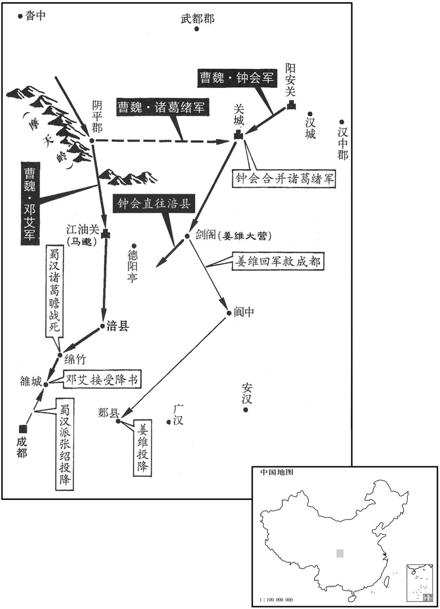
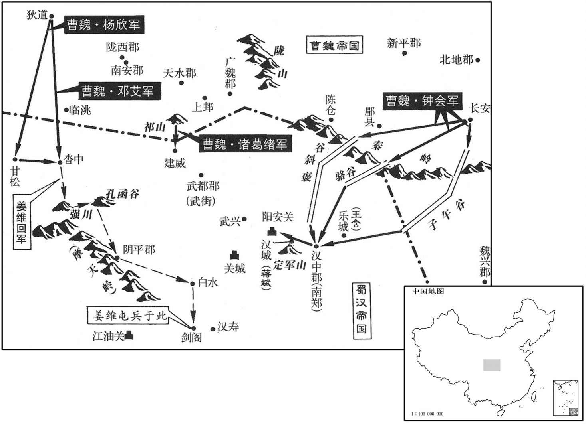

卷次与人物目录 / 卷78
资治通鉴 · 卷第七十八【魏纪十】
公元262年至公元264年 · 原文、白话与胡三省注
本页按胡注本编排保存全卷内容。白话采用本站所据译本，未可靠对应的内容另列说明；事件标题用于定位，并非原书文字。
本卷共76段原文，76段有译文对应，0段缺译或待核对。
卷第七十八【魏纪十】起玄黓敦牂（壬午），尽阏逢涒滩（甲申），凡三年。
卷首原文与注释
元皇帝下
公元262年 · 魏元皇帝景元三年
景元三年〔（壬午、二六二、）〕
上传原文的注释括号有异常，字符原样保留；无法可靠划分的段落默认全文显示。
本年事件索引（现代整理）
秋，八月，乙酉，吴主立皇后朱氏，朱公主之女也。戊子，立子声为太子。〔声，乌关翻。据吴志，吴主休为四子作名字，声，音湖水湾澳之湾，非先有此音也。〕
秋季，八月，乙酉（十六日），吴王立皇后朱氏，她是朱公主的女儿。戊子（十九日），立孙为太子。
汉大将军姜维将出军，右车骑将军廖化曰：「兵不戢，必自焚，伯约之谓也。〔左传，鲁众仲曰：兵，犹火也，不戢，将自焚。姜维，字伯约。廖，力救翻。今力吊翻。〕智不出敌而力小于寇，用之无厌，将何以存！」〔谓较智则不出于敌人之上，而较力则又弱小也。厌，于盐翻。〕冬，十月，维入寇洮阳，〔洮阳，洮水之阳也。洮水之阴，魏不置郡县，维渡洮而攻之也。沙州记曰嵹城东北三百里有曾城，临洮水，曰洮阳城。杜佑曰：临洮郡城本洮阳城，临洮水。洮，土刀翻。〕邓艾与战于侯和，破之，维退住沓中。〔水经注：洮水径洮阳城，又东径共和山南，城在四山中，又东径迷和城北。意侯和即此地也。沓中右诸羌中，即沙漒之地。晋张骏据河西，因前赵之乱，收河南地，至于狄道，置武街、石门、侯和、漒川、甘松五屯护军，与后赵分境。乞伏炽盘攻漒川，师次沓中。则侯和之地在塞内，沓中之地在羌中明矣。〕初，维以羁旅依汉，〔维降汉见七十一卷明帝太和元年。〕身受重任，兴兵累年，功绩不立。黄皓用事于中，与右大将军阎宇亲善，阴欲废维树宇。维知之，言于汉主曰：「皓奸巧专恣，将败国家，请杀之！」〔败，补迈翻。〕汉主曰：「皓趋走小臣耳，往董允每切齿，〔事见七十四卷邵陵厉公正始六年。〕吾常恨之，君何足介意！」维见皓枝附叶连，惧于失言，逊辞而出。汉主敕皓诣维陈谢。维由是自疑惧，〔此维未出洮阳以前事也。〕返自洮阳，因求种麦沓中，不敢归成都。〔司马昭因是决绊维于沓中而伐蜀。〕
蜀汉大将军姜维将要出兵征战，右车骑将军廖化说：“兵不止，必自焚，说的就是姜维。智谋超不出敌人，力量也小于敌人，而用兵没有满足的时候，将何以自存？”冬季，十月，姜维入侵洮阳，邓艾与他在侯和交战，打败了他。姜维撤兵驻扎在沓中。当初，姜维因寄居在外而投奔蜀汉，身受重任，连年兴兵，但没有建立什么功绩。黄皓在朝内当政，与右大将军阎宇关系交好，暗地里想废掉姜维而树立阎宇。姜维知道后，就对汉后主说：“黄皓奸诈巧伪专权任意，将会败坏国家，请杀了他！”汉后主说：“黄皓不过是在前面往来奔走的小臣，以前董允也常对他切齿痛恨，我常常为此遗憾，你何必介意他！”姜维见黄皓的党羽象树木的枝叶那样相互依附勾结，害怕自己失言，说了几句谦恭的话就出来了。汉后主让黄皓到姜维那里解释、谢罪。姜维从此就更加疑虑恐惧，从洮阳返回后，就要求到沓中去种麦，不敢返回成都。
吴主以濮阳兴为丞相，廷尉丁密、光禄动孟宗为左右御史大夫。〔汉成帝绥和元年，罢御史大夫，置大司空，世祖中兴因之。献帝建安十三年，罢司空，复置御史大夫，未尝分左右也。盖吴分之。〕初，兴为会稽太守，〔会，工外翻。守，式又翻。〕吴主在会稽，兴遇之厚；左将军张布尝为会稽王左右督将，〔吴主休先封琅邪王，徙居会稽，自会稽入立，未尝封会稽王也。「会稽」，当作「琅邪」。将，即亮翻。〕故吴主即位，二人皆贵宠用事；巾典宫省，兴关军国，以佞巧更相表里，〔更，工衡翻。〕吴人失望。
吴王任命濮阳兴为丞相，廷尉丁密、光禄勋孟宗为左右御史大夫。当初，濮阳兴任会稽太守，吴王居住在会稽，濮阳兴对他很好，左将军张布曾任会稽王的左右督将，因此吴王即位之后，濮阳兴和张布二人受到尊崇而执掌朝政；张布主管朝内官署，濮阳兴主管军国之事，二人在里里外外阿谀欺蒙，吴国人很失望。
吴主喜读书，〔喜，许记翻。〕欲与博士祭酒韦昭、博士盛冲讲论，〔前汉五经博士有仆射一人，东汉转为祭酒。胡广曰：官名祭酒，皆一位之元长也。古礼宾客得主人馔，老者一人举酒以祭于地，旧说以为示有先。沈约志曰：吴王濞为刘氏祭酒。夫祭祀以酒为本，长者主之，故以祭酒为称。汉侍中、魏散骑常侍高功者并为祭酒。公府祭酒，汉末有之。〕张布以昭、冲切直恐其入侍，言己阴过，固谏止之。吴主曰：「孤之涉学群书略徧，但欲与昭等讲习旧闻，亦何所损！君特当恐昭等道臣下奸慝，故不欲令入耳。如此之事，孤已自备之，不须昭等然后乃解也。」布皇恐陈谢，且言惧妨政事，吴主曰：「王务、学业，其流各异，不相妨也，〔王务，犹言王事也。〕此无所为非，而君以为不宜，是以孙有所及耳。不图君今日在事更行此于孤也，良甚不取！」布拜表叩头。〔据陈寿志，自孙之涉学已下，皆诏答之语，布得诏惶恐，以表陈谢，重自序述，吴主又面答之。自王务学业以下，皆面答之语也。此「表」字衍。在事者，在官任事也。〕吴主曰：「聊相开悟耳，何垤叩头乎！如君之忠诚，远近所知，吾今日之巍巍，皆君之功也。诗云：『靡不有初，鲜克有终。』〔诗大雅荡之辞。鲜，息浅翻。〕终之实难，君其终之。」然吴主恐布疑惧，卒如布意，〔卒，子恤翻。〕废其讲业，不复使昭等入。〔复，扶又翻。〕
吴王喜爱读书，想要与博士祭酒韦昭、博士盛冲一起讲论学术，张布因为韦昭、盛冲二人性情耿直，恐怕他们入侍之后，对吴王说自己暗地里做的错事，因此坚持劝谏，不让他们入宫。吴王说：“我涉猎学术，群书大致都读完了，现在只想与韦昭等人讲论学习以前所学的内容，这又有什么损害？你不过害怕韦昭等人谈论臣下的奸诈邪慝之行，所以不想让他们入宫。象这类事情，我自己已经有所了解，不须韦昭等人说了然后才知道。”张布十分惶恐地谢罪，又说这是恐怕妨碍政事，吴王说：“政事和学术，其源流各不相同，不会相互妨碍，让他们入宫没有什么不对的，而你却认为不宜让他们来，因此我才说起这些事。没想到你今日在官任事又对我做这种不让接近儒生的事，这实在让我不能同意！”张布跪下叩头。吴王说：“我不过是开导开导你，何必叩头谢罪呢！象你这样的忠诚，远近之人都很了解，我能有今日南面为君的尊严，全都是你的功劳。《诗》云：‘事皆有始，却少能终。’坚持到最后是很难的，希望你能坚持到最后。”但吴王恐怕张布会怀疑害怕，终究还是顺了张布之意，废止讲论学业，不再让韦昭等人入宫。
谯郡嵇康，〔晋书曰：康之先姓奚，会稽上虞人，以避怨徙谯郡铚县，铚有嵇山，家于其侧，因以命氏。〕文辞壮丽，好言老、庄而尚奇任侠，〔侠，户颊翻。〕与陈留阮籍、籍兄子咸、〔姓谱：殷有阢国，在岐、渭之间。周诗有侵阮徂共之辞，子孙以国为姓。后汉有已吾令阮敦。〕河内山涛、河南向秀、〔向，式亮翻。〕琅邪王戎、沛国刘令特相友善，号竹林七贤。皆崇尚虚无，轻蔑礼法，纵酒昏酣，遗落世事。
谯郡人嵇康，文章写得雄壮清丽，喜好谈论《老子》、《庄子》，高节奇行，行侠仗义。他与陈留人阮籍、阮籍的侄子阮咸、河内人山涛、河南人向秀、琅邪人王戎、沛国人刘伶是至交好友，号称竹林七贤。他们都崇尚虚无之论，轻蔑礼仪法度，每日以纵情饮酒为乐，不问世事。
阮籍为步兵校尉，其母卒，籍方与人围碁，对者求止，籍留与决赌。〔与决胜负也。〕既而饮酒二斗，举声一号，吐血数升，毁瘠骨立。〔骨立者，言其瘠甚，身肉俱消，唯骨立也。号，户刀翻。吐，土故翻。〕居丧，饮酒无异平日。司隶校尉何曾恶之，〔恶，乌路翻。〕面质籍于司马昭座〔质，正也，面以正义责之也。〕曰：「卿，纵情、背礼、败俗之人，今忠贤执政，综核名实，若卿之曹，不可长也！」〔背，蒲妹翻。败，补迈翻。长，知两翻。〕因摈之四曰：「公方以孝治天下，〔治，直之翻。〕而听阮籍以重哀饮酒食肉于公座，何以训人！宜摈之四裔，无令污染华夏。」〔污，乌故翻。〕昭爱籍才，常拥护之。〔昭之让九锡也，籍为公卿为劝进笺，辞甚清壮，故昭爱其才。〕曾，夔之子也。〔何夔见六十三卷汉献帝建安五年。〕
阮籍任步兵校尉，他母亲去世时，他正在与别人下围棋，对方要求停止，但阮籍却要他留下一块胜负。下完棋喝了两斗酒，高声一喊，吐血数升，极度哀痛而消瘦得只剩皮包骨了。居丧期间，和平日一样饮酒无度。司隶校尉何曾很讨厌他，就在司马昭座位前当面指责阮籍说：“你是个纵情无度、违背礼仪、败坏风俗的人，如今忠贤之人执掌朝政，要综合考察人事的名与实，象你这类人，不可助长你的恶习！”于是就对司马昭说：“您正在以孝道治理天下，却听任阮籍居丧期间在您的座前饮酒吃肉，以后还怎么教训别人？应该把他流放到四方荒远之地，不让他污染我们华夏的风气。”司马昭喜爱阮籍之才，常常扶助保护他。何曾是何夔之子。
阮咸素幸姑婢；姑将婢去，咸方对客，遽借客马追之，累骑而还。〔累，重也，两人共马，谓之累骑。还，音旋，又如字。〕
阮咸喜欢姑姑的婢女，姑姑把婢女领走时，阮咸正在陪客，赶快借了客人的马去追，然后两人骑一匹马回来了。
刘伶嗜酒，常乘鹿车，〔贤曰：鹿车，言其小仅可容鹿也。〕携一壶酒，使人荷锸随之，〔荷，下可翻。锸，侧洽翻，锹也。〕曰：「死便埋我。」当时士大夫皆以为贤，争慕效之，谓之放达。
刘伶喜好饮酒，常常乘一辆小车，带着一壶酒出游，又让人扛着锹跟着，说：“死了就把我埋掉。”当时士大夫都认为他贤明，争相仿效他的做法，称作放达。
锺会方有宠于司马昭，闻嵇康名而造之，〔造，七到翻。〕康箕踞而锻，〔康性巧而好锻，都玩翻。小冶也。〕不为之礼。会将去，康曰：「何所闻而来，何所见而去﹖」会曰：「闻所闻而来，见所见而去！」遂深衔之。
钟会正受到司马昭的宠爱，听到嵇康的名声就去拜访他，嵇康伸腿坐在那里毫不在乎地打铁，很不礼貌地对待钟会。钟会将要离去，嵇康问他说：“你听到了什么而来，见到了什么而去？”钟会说：“听我所听到的而来，见我所见到的而去！”从此他对嵇康怀恨在心。
山涛为吏部郎，〔魏尚书郎有二十三员，吏部其一也。〕举康自代；康与涛书，自说不堪流俗，而非薄汤、武。昭闻而怒之。〔汤、武革命，而康非薄之，故昭闻而怒。〕康与东平吕安亲善，安兄巽诬安不孝，康为证其不然。〔为，于伪翻。〕会因谮「康尝欲助毌丘俭，〔言毌丘俭反，而康欲助之。毌，音无。〕且安、康有盛名于世，而言论放荡，害时乱教，宜因此除之。」昭卜遂杀安及康。康尝诣隐者汲郡孙登，〔晋泰始二年，始分河内为汲郡，史追书也。登曰：「子才多识寡，难乎免于今之世矣！」
涛任吏部郎，推荐嵇康代替自己；嵇康给山涛写信，说自己不堪忍受流俗，又菲薄商汤、周武王。司马昭听到后十分生气。嵇康与东平的吕安是好朋友，吕安之兄吕巽诬陷吕安不孝，嵇康为他作证说并非不孝。钟会借此事诬告说：“嵇康曾经想帮助丘俭，而且吕安、嵇康在世上享有盛名，但他们的言论放荡不羁，为害时俗，扰乱政教，应该乘此机会把他们除掉。”于是司马昭就杀了吕安和嵇康。嵇康曾去拜访隐士汲郡人孙登，孙登说：“你才气多见识少，在当今之世难免被杀！”
司马昭患姜维数为寇，官骑路遗求为刺客人蜀，〔官骑，驺骑也。数，所角翻。角骑，奇寄翻。〕从事中郎荀勖曰：「明公为天下宰，宜杖正义以伐违贰，〔违，离也，背也。贰，携贰也，两属也。〕而以刺客除贼，非所以刑于四海也。」〔毛苌曰：刑，法也。韩婴曰：刑，正也。〕昭善之。勖，爽之曾孙也。〔荀爽，淑之子也，汉末为公。〕
司马昭忧虑姜维屡次进犯，官骑路遗要求当刺客入蜀去杀姜维，从事中郎荀勖对司马昭说：“明公是天下的主宰，应该依仗正义去讨伐不归服者，而用刺客去除掉敌人，这不是被四海之人作为表率的做法。”司马昭很赞成他的话。荀勖是荀爽的曾孙。
昭欲大举伐汉，朝臣多以为不可，独司隶校尉锺会劝之。昭谕众曰：「自定寿春以来，息役六年，治兵缮甲以拟二虏。〔治，直之翻。〕今吴地广大而下湿，攻之用功差难，不如先定巴蜀，三年之后，因顺流之势，，水陆并进，此灭虢取虞之势也。〔春秋，晋献公灭虢虞，此言灭蜀乘势可以灭吴也。〕计蜀战士九万，居守成都及备他境不下四万，然则余众不过五万。今绊姜维于沓中，〔绊，博漫翻。系足曰绊。〕使不得东顾，直指骆谷，出其鑋虚之地以袭汉中，以刘禅之闇，而道城外破，士女内震，甚亡可知也。」乃以锺会为镇西将军，都督关中。征西将军邓艾以为蜀未有衅，屡陈异议；〔善用兵者，观衅而动，此艾所以陈异议也。〕昭使主簿师纂为艾司马以艾司马以谕之，〔姓谱：师，古者掌桨之官，因以为氏。〕艾乃奉命。
司马昭想要大举讨伐蜀汉，朝臣们大都认为不可，只有司隶校尉钟会赞成。司马昭告谕众人说：“自从平定寿春以来，已经六年没有战事了，我们要整治军队去攻打两个敌国。如今吴国土地广大而地势低湿，攻打他旋展兵力较为困难，不如先平定巴蜀，三年之后，就顺流而下，水陆并进，这就是春秋时晋献公先灭虢国再乘势攻取虞国的那种形势。蜀国的战士共计有九万，居守成都以及防卫其他边境的不下四万人，这样剩余的战士不过五万人。如今把姜维牵制在沓中，让他不能向东出兵。我们发兵直向骆谷，通过他们的空虚地带去袭击汉中，以刘禅的暗弱无能，又加上边境城市在外面被攻破，蜀国的男女老少就会在内地震恐不安，这样敌人的灭亡就是意料之中的事。”于是任命钟会为镇西将军，都督关中。征西将军邓艾认为蜀国没有可乘之机，屡次陈述不同意见；司马昭让主簿师纂担任邓艾的司马去给他讲明道理，于是邓艾也就奉命行事了。
姜维表汉主：「闻锺会台兵关中，欲规进取，宜并遣左右车骑张翼、廖化，〔时张翼为左车骑将军。〕督诸军分护阳安关口〔阳安关口，意即阳不关也。〕及令平之桥头，〔杜佑曰：阴平桥头在文州界。〕以防未然。」黄皓信巫鬼，谓敌终不自致，〔致，至也，又诣也，送也。〕启汉主寝其事，群臣莫知。
姜维向汉后主上表说：“听说钟会在关中整治军队，想图谋进攻，应该派遣左右车骑将军张翼、廖化率领诸军分别守护阳安关口和阴平的桥头，以防患于未然。”黄皓相信鬼神巫术，认为敌人终究不会自己找上门来，于是就奏明汉后主让他不提这件事，因而群臣没人知道。
公元263年 · 魏元皇帝景四年
四年〔（癸未、二六三）〕
上传原文的注释括号有异常，字符原样保留；无法可靠划分的段落默认全文显示。
本年事件索引（现代整理）
- 司马昭再次辞让晋公、相国与九锡
- 交趾百姓杀死贪暴太守孙谞，九真、日南响应起事
- 魏军三路伐蜀，锺会统军直逼汉中
- 王戎预言平蜀后难以保全，刘寔也料锺会、邓艾难以生还
- 魏军自洛阳出发，司马昭斩杀反对伐蜀的邓敦
- 蜀汉令各据点退守汉城、乐城，锺会进军汉中
- 蒋舒叛降开关，傅佥力战而死，锺会夺取阳安关粮仓
- 姜维摆脱诸葛绪拦截，与廖化等合兵退守剑阁
- 高柔去世
- 吴国派丁奉、丁封等分路援蜀
- 曹芳授司马昭相国与九锡，司马昭接受
- 司马昭起用魏舒，魏舒中年发奋后以才干获重用
- 曹芳立卞氏为皇后
- 邓艾绕道阴平袭取江油，击败诸葛瞻并攻入成都平原
- 邓艾险行七百里奇袭成都，击败诸葛瞻并斩杀黄崇
- 谯周劝刘禅降魏，刘谌哭祭昭烈庙后杀妻儿自尽
- 刘禅出降，邓艾安抚蜀地并承制任命刘禅为骠骑将军
- 姜维奉刘禅敕命降锺会，蜀军将士愤而斫石
- 吴国闻蜀亡后停止援军行动
- 张悌预言魏必灭蜀，吴人事后信服
- 锺离牧击退魏军，平定武陵五溪
- 郑冲任太保
- 魏分益州另置梁州
- 魏赦免益州士民，五年减免一半租税
- 邓艾任太尉，锺会任司徒
- 郭太后
- 邓艾建议平蜀后乘势招降东吴，司马昭命其不得擅自行事
- 锺会与姜维密谋叛魏，伪造邓艾书信构陷邓艾

本年形势与背景参考图
春，正〔【章：甲十一行本「正」作「二」；乙十一行本同；孔本同；张校同；退斋校同。】〕月，复命司马昭进爵位如前；〔如元年之诏也。复，扶又翻。〕又辞不受。
春季，二月，再次晋升司马昭的爵位如前所命，但司马昭又推辞不受。
吴交趾太守孙谞贪暴，〔谞，私吕翻。〕为百姓所患；会吴主遣察战邓荀至交趾，〔裴松之曰：察战，吴官号，今扬都有察战巷。〕荀擅调孔爵三十头送建业，〔调，徒吊翻。〕民惮远役，因谋作乱。夏，五月，郡吏吕兴等杀谞及荀，遣使来请太守及兵，九真、日南皆应之。
吴国交趾太守孙贪婪残暴，被百姓所厌恨；恰好此时吴王又派遣察战邓荀到交趾去，而邓荀又擅自调用三十个大爵送往建业，百姓害怕遥远的劳役，于是就图谋作乱。夏季，五月，郡吏吕兴等人杀掉了孙和邓荀，派使者来请求给他派太守和兵力，九真、日南二郡也都响应他。
诏诸军大举伐汉，遣征西将军邓艾督三万余人自狄道趣甘松、沓中，〔甘松，本生羌之地，张骏置甘松护军，乞伏国仁置甘松郡。后魏时，白水羌朝贡，置甘松县，太和六年，改置扶州。隋改甘松为嘉诚县，属同昌郡。唐武德初，置松州，取甘松岭为名，且其地产甘松也。杜佑曰：甘松岭，江水发源之地，甘松山在今交川郡境，今临洮和政郡之南及合川郡之地。新唐书曰：甘松山在洮水之西，吐谷浑居山之阳。〕以连缀姜维；雍州刺史诸葛绪督三万余人自祁山趣武街桥头，绝维归路。〔贤曰：下辨县属武都郡，今城州同谷县，旧名武街城。水经注：浊水径武街城南。又曰：白水出临洮县西倾山东南，径阴平故城南，又东北径桥头。雍，于用翻。〕锺会统十余万众分从斜谷、骆谷、子午谷趣汉中。〔斜，余遮翻。谷，音浴。趣，七喻翻。〕以廷尉卫瓘持节监艾、会军事，行镇西军司。〔锺会时为镇西将军，瓘既监艾、会军，又行会军司。监，古衔翻。〕瓘，觊之子也。〔卫觊历事武帝、文帝、明帝。觊，音冀。〕
诏令诸军大举进攻蜀汉，派征西将军邓艾率领三万人从狄道奔赴甘松、沓中，以牵制姜维；派雍州刺史诸葛绪率领三万多人从祁山奔赴武街、桥头，断绝姜维的退路。钟会统兵十万余人分别从斜谷、骆谷、子午谷奔赴汉中。让廷尉卫持符节监督邓艾、钟会的军事，兼镇西军司。卫是卫之子。

会过幽州刺史王雄之孙戎，〔王雄刺幽州，遣勇士刺杀轲比能。〕问：「计将安出」﹖」戎曰：「道家有言，『为而不恃。』〔老子道经之言。〕非成功难，保之难也。」或问参相国军事平原刘寔曰：「锺、邓其平蜀乎﹖」寔曰：「破蜀必矣，而皆不还。」客问其故，寔笑而不答。〔锺、邓之祸，识者固知之矣。〕
钟会去拜访幽州刺史王雄之孙王戎，问他：“我将怎样去干？”王戎说：“道家有句话说‘为而不恃’，也就是说成功并不难，而保持它则很难。”有人问参相国军事、平原人刘说：“钟会、邓艾能平定蜀国吗？”刘说：“破蜀是必然的，但他们都回不来。”对方问是什么原因，刘笑而不答。
秋，八月，军发洛阳，大赉将士，〔赉，来代翻，赐也。〕陈师誓众。将军邓敦谓蜀未可讨，司马昭斩以徇。
秋季，八月，从洛阳发兵，大赏全军将士，列队誓师。将军邓敦说不能去讨伐蜀国，司马昭就把他杀了示众。
汉人闻魏兵且至，乃遣廖化将兵诣沓中为姜维继援，张翼、董厥等诣阳安关口为诸围外助。大赦，改元炎兴。敕诸围皆不得战，退保汉、乐二城，〔用姜维之言也。〕城中各有兵五千人。翼、厥北至阴平，闻诸葛绪将向建威，留住月余待之。锺会率诸军平行至汉中。九月，锺会使前将军李辅统万人围王含于乐城，謢军荀恺围蒋斌于汉城。〔斌，音彬。考异曰：晋书文纪作「部将易恺」，今从魏志。〕会径过西趣阳安口，遣人祭诸葛亮墓。〔诸葛亮葬沔阳。〕
蜀汉听到魏兵将至，就派遣廖化率兵到沓中作姜维的后援，派张翼、董厥等人到阳安关口帮助各个外围据点。实行大赦，改年号为炎兴。命令各外围据点不得与敌人交战，退守汉、乐二城，城中各有兵力五千人。张翼、董厥向北到达阴平，听到诸葛绪将向建威发兵，就留住一个多月等待敌兵。钟会率诸军齐头并进，到达汉中。九月，钟会让前将军李辅统兵万人把王含包围在乐城，让护军荀恺把蒋斌包围在汉城。钟会直接从西路奔向阳安口，派人祭奠了诸葛亮墓。
初，汉武兴督蒋舒在事无称，〔宋白曰：武兴，汉武都沮县地。元和郡国志曰：兴州城即古武兴城也，蜀以处当冲要，置武兴督以守之。无称，言其庸庸无可称者。〕汉朝令人代之，〔朝，直遥翻。〕使助将军傅佥守关口，舒由是恨。锺会使护军胡烈为前锋，攻关。舒诡谓佥曰：「今贼至不击而闭城自守，非曰：「子以保城获全为功，我以出战克敌为功，请各行其志。」遂率其众出；佥谓其战也，不设备。〔使舒果迎战，亦未可保其必胜，佥何为不设备邪﹖关城失守，佥亦有罪焉。〕舒率其众迎降胡烈，〔降，户江翻。〕烈乘虚袭城，佥格鬬而死。佥，肜之子也。〔傅肜死事见六十九卷文帝黄初三年。肜，余中翻。〕锺会闻关口已下，长驱而前，大得库藏积榖。〔藏，徂浪翻。〕
两版字句有差异，建议核对原文。
当初，蜀汉的武兴督蒋舒在位庸碌无为，蜀汉朝廷让人代替了他，派助将军傅佥把守关口，蒋舒因此怀恨在心。钟会派护军胡烈为前锋，进攻关口。蒋舒诡诈地向傅佥说：“如今敌兵到了，不去进击而闭城自守，不是好的计策。”傅佥说：“你以保全此城为功劳，我以出战打败敌人为功劳，希望我们各行其志。”于是率领他的兵士出城；傅佥认为他是去交战，因此没有防备。蒋舒率领他的士兵迎接投降了胡烈，胡烈乘虚袭击城池，傅佥格斗拼杀而死。傅佥是傅肜之子。钟会听到关口已被攻克，就长驱直入，获得大量库藏的粮食。
邓艾遣天水太守王颀直攻姜维营，〔前汉天水郡，后汉改曰汉阳郡，魏复曰天水。颀，渠希翻。〕陇西太守牵弘邀其前，金城太守杨欣趣甘松。维闻锺会诸军已入汉中，引兵还，欣等追蹑于强川口，大战，〔强川口，在嵹台山南。嵹台山，即临洮之西倾。阚骃曰：强水出阴平西北强山，一曰强川。姜维之还也，邓艾遣王颀追败之于强口，即是地也。〕维败走。闻诸葛绪已塞道屯桥头，〔塞，悉则翻。〕乃从孔函谷入北道，欲出绪后：绪闻之，却还三十里。维入北道三十余里，闻绪军却，寻还，从桥头过，绪趣截维，较一日不及。〔言较迟一日遂不及维也。〕维遂还至阴平，合集士众，欲赴关城；〔【章：甲十一行本「城」下有「未到」二字；乙十一行本同；孔本同；张校同；退斋校同。】〕闻其已破，退趣白水，遇廖化、张翼、董厥等，合兵守剑阁以拒会。〔水经注：小剑戌西去大剑山二十里，连山绝险，飞阁通衢，故谓之剑阁。华阳国志曰：广汉郡德阳县有剑阁道三十里，至险。祝穆曰：剑门，汉属广汉郡，为葭萌县地，蜀先主以霍峻为梓潼太守，有剑阁县。苻秦使筡成寇蜀，攻二剑，克之，始有二剑之号。〕
邓艾派遣天水太守王颀直攻姜维营垒，陇西太守牵弘在前面阻截，金城太守杨欣奔赴甘松。姜维听说钟会诸军已经进入汉中，就领兵返回，杨欣等人在后面紧追至强川口，激烈交战，姜维败走。姜维又听到诸葛绪已经阻塞道路占据了桥头，于是就从孔函谷进入北部道路，想绕到诸葛绪的身后，诸葛绪知道后往回退却三十里。姜维进入北道三十多里后，听到诸葛绪退兵，赶紧往回走，从桥头过去，诸葛绪赶上去阻截姜维，但晚了一天没有赶上。姜维于是退至阴平，聚集军队，想要奔赴关城；还没到达，听说关城已破，于是退兵奔向白水，遇到了廖化、张翼、董厥等人，兵合一处据守剑阁以抵御钟会。
安国元侯高柔卒。
安国元侯高柔去世。
冬，十月，汉人告急于吴。甲申，吴主使大将军丁奉督诸军向寿春；将军留平就施绩于南郡，议兵所向；将军丁封、孙异如沔中以救汉。〔沔中，时为魏境，吴兵未能至也，拟其所向耳。吴之巫、秭归等县，皆在江北，与魏之新城接境，自北行兵，亦可以发沔中，然犹泪西江之水以救涸辙之鱼耳。〕
冬季，十月，汉人向吴国告急求援。甲申（疑误），吴王派大将军丁奉率领诛军进兵寿春；让将军留平到南郡的施绩那里，商议向何处进兵之事；让将军丁封、孙异到沔中去救援蜀汉。
诏以征蜀诸将献捷交至，复命大将军昭进位，爵赐一如前诏，〔复，扶又翻。〕昭乃受命。〔始受相国、晋公、九锡之命。〕
诏令因征蜀的各位将领捷报频传，再次命大将军司马昭晋位，所赐爵位一切都与前面的诏令相同，司马昭终于接受了任命。
昭辟任城魏舒为相国参军。〔任，音壬。〕初，舒少时迟钝，〔【章：甲十一行本「钝」下有「质朴」二字；乙十一行本同；孔本同；张校同。】〕不为乡亲所重，〔乡里、亲戚也。少，诗照翻。〕从叔父吏部郎衡，有名当世，〔从，才用翻。〕亦不知之，使守水碓，〔为碓水侧，置轮碓后，以横木贯轮，横木之两头，复以木长二尺许，交午贯之，正直碓尾。木泪水灌轮，轮转则交午木戛击碓尾木而自舂，不烦人力，谓之水碓。碓，都内翻。〕每叹曰：「舒堪数百户长，〔谓小邑长也。长，知两翻。〕我愿毕矣！」舒亦不以介意，不为皎厉之事。〔皎者，求以暴白于世。厉危行也。〕唯太原王乂谓曰：「卿终当为台辅。」常振其匮乏，舒受而不辞。年四十余，郡举上计掾，〔上，时掌翻。掾，于绢翻。〕察孝廉。宗党以舒无学业，劝令不就，可以为高。誃曰：「若试而不，〔中，竹仲翻。〕其负在我，安可虚窃不就之高以为己荣乎！」于是自课，百日习一经，因而对策升第，累迁后将军锺毓长史。毓每与参佐射，〔参佐，参军及诸佐吏也。毓，余六翻。〕舒常为画筹而已；〔射之有朋，犹投壶之释算也。为，于伪翻；下徐为同。〕后遇朋人足，以舒满数，〔射以两人为朋。射有朋，犹古射仪之有耦也。周礼：王以六耦射三侯。诸侯以四耦射二侯，卿大夫以三耦射一侯，士以三耦射豻侯。左传：鲁襄公享范献子，射者三耦，公臣不足，取于家臣。杜预注云：二人为耦。〕舒容范闲雅，发无不中；〔中，竹仲翻〕举坐愕然，莫有敌者。〔坐，徂卧翻。〕毓叹而谢曰：「吾之不足以尽卿才，有如此射矣，岂一事哉！」及为相国参军，府朝碎务，未尝见是非；〔府朝，犹言府庭也。朝，直遥翻。见，贤遍翻。〕至于废兴大事，众人莫能断者，〔断，丁乱翻。〕舒徐为堸之，多出众议之表。昭深器重之。
司马昭提升任城人魏舒为相国参军。最初，魏舒少年时反映迟钝，较为质朴，不受乡里亲戚的重视，他的堂叔吏部郎魏衡，在当时很有名望，也不了解魏舒，就让他去看守水碓，而且常常叹气说：“魏舒如果能担当数百户的官长，我也就心满意足了。”魏舒毫不介意，也不干那些能显示抬高自己的事。只有太原的王对魏舒说：“你终究会达到三公宰相的地位。”又常常拿出钱财周济魏舒，魏舒也毫不推辞地接受。四十余岁时郡里举拔上计掾、掌簿记孝廉。亲戚朋友认为魏舒没有什么学业，劝他不要去应考，还可以显示清高。魏舒说：“如果考试不中，是我本事不够，怎能虚假地盗窃清高的名声以为自己的荣耀呢？”于是刻苦自学，每百日学一部经书，因而对策得到提升，累次提升到担任后将军钟毓的长史。钟毓每次与参军、佐吏一起举行射箭比赛，魏舒只是常常为他们计算成绩而已；后来遇到比赛人数不足，就让魏舒来凑数，魏舒仪范闲雅，发无不中，所有的人都十分愕然，没有人能敌得过他。钟毓感叹地道歉说：“我不能够充分发挥你的才能，就象这次射箭一样，其实何止这一件事呢！”魏舒担任相国参军之后，处理相国府中琐碎的事务，未曾出现什么纠纷；至于该废该兴的大事，众人不能决断的，魏舒都能从容地为之筹划，而且大多比众人的议论高明。因此，司马昭非常器重魏舒。
癸卯，立皇后卞氏，昭烈将军秉之孙也。
癸卯（十一日），魏国立皇后卞氏。卞氏是昭烈将军卞秉的孙女。
邓艾进至阴平，简选精锐，欲与诸葛绪自江油趣成都，〔水经注：涪水出广汉属国刚氐道徼外，钿南流，径鼦竹县北，又东南径江油戌北。邓艾自阴平、景谷步道悬兵东马入蜀，径江油、广汉者也。宋白曰：龙州江油郡北踰山至文州三百三十里。文州，汉阴平地也。邓艾自阴平行无人之地七百里至江油，即此。九域志：龙州北至文州四百三十里。元丰九域志：龙州治江油县，南至绵州二百余里。〕绪以本受节度邀姜维，西行非本诏，遂引军向白水，〔此白水关也。贤曰：在今梁州金牛县西，东北至关城百八十里。〕与锺会合。会欲专军势，密白绪畏懦不进，槛车微还，，军悉属会。
邓艾进兵到达阴平，挑选了精锐部队，想要与诸葛绪一起经江油直奔成都，诸葛绪因为本来接受的命令是阻截姜维，而向西行进不是给他的诏令，所以率军奔向白水，与钟会会合。钟会想要专擅军权，就秘密报告说诸葛绪畏惧敌兵不敢前进，于是用囚车把诸葛绪押送回京，而军权全部归钟会掌握了。
姜维列营守险，会攻之不能克，粮道险远，军食乏，欲引还。邓艾上言：「贼已摧折，宜遂乘之，若从阴平由邪径经汉德阳亭〔按前汉无德阳县。后汉志：广汉郡始有德阳县，盖因汉故亭而置县也。自蜀分广汉置梓潼郡之后，剑阁县属梓潼，德阳县属广汉。续汉志以为德阳县有剑阁。今姜维守剑阁拒锺会，而邓艾欲从德阳亭趣涪，则此时分为两县明矣。然德阳亭亦非此时德阳县治，盖前汉德阳亭故处也。此道即所谓阴平、景谷道。〕趣涪，〔趣，七喻翻。涪，音浮。〕出剑阁西百里，去成都三百余里，奇余冲其腹心，出其不意，剑阁之守必还赴涪，则会方轨而进，剑阁之军不还，则应涪之兵寡矣。」〔趣，七喻翻。涪，音浮。〕遂自阴平行无人之地七百余里，凿山通道，造作桥阁。〔今隆庆府阴平县北六十里有马阁山，峻嶒，极为艰险。邓艾军行至此，路不得通，乃悬车东马，造作栈阁，始通江油，因名马阁。又自文州青塘岭至龙州百五十里，自北而南者，右肩不得易所负，谓之左担路，亦艾伐蜀路也。据锺会传，艾自汉德阳亭入江油左担道，则德阳亭盖当马阁山之路。〕山谷高深，至为艰险，又粮运将匮，濒于危殆，艾以毡自裹，推转而下。〔推，吐雷翻。〕将士皆攀木缘崖，鱼贯而进。〔山崖险莅，单行相继而进，如贯鱼然。〕先登至江油，〔江油，今龙州江油县地，南至绵州二百余里。绵州，古涪城也。〕蜀守将马邈降。〔降，户江翻；下同。〕诸葛瞻督诸军拒艾，至涪，停住不进。〔陈寿曰：涪去成都三百六十里。〕尚书郎黄崇，权之子也，〔黄权，刘璋所用，先主伐吴而败，权隔在江北，遂降魏。〕屡劝瞻宜速行据险，无令敌得平地，瞻犹豫未纳；崇再三言之，至于流涕，瞻不能从。艾遂长驱而前，击破瞻前锋，瞻退住鼦竹。〔鼦竹县，属广汉郡。今绵竹县东北至绵州百余里。〕艾以书诱瞻曰：「若降者，必表为琅邪王。〔诸葛氏，本琅邪人，故以此诱之。诱，音酉。〕瞻怒，斩艾使，列陈以待艾。〔使，疏吏翻。陈，读曰阵；下同。〕艾怒曰：「存亡之分，在此一举，何不可之有！」叱忠、纂等，将斩之。忠、纂驰还更战，大破斩瞻及黄崇。瞻子尚叹曰：「父子荷国重恩，〔荷，下可翻。〕不早斩黄皓，使败国殄民，用生何为！」策马冒陈而死。〔杜佑曰：汉州德阳县，邓艾破诸葛瞻于此，因为京观。败，补迈翻。〕
姜维排列营垒据守险要之地，钟会进攻不能取胜，而且运粮道路既危险又遥远，想要领兵撤回。邓艾上书说：“敌兵已经受到摧折，应乘胜进军，如果从阴平出发由小路经过汉朝的德阳亭奔赴涪县，从剑阁之西一百里处进军，离成都三百余里，在这里出奇兵冲击其腹心之地，那么剑阁的守军必然往回奔赴涪县，而钟会就可以两车并行着向前推进。如果剑阁的守军不往回撤，那么接应涪县的兵力就会很少了。”于是从阴平出发走了七百余里的无人之地，凿山开路，架桥梁建阁道，山高谷深，非常艰险，运来的粮食也将吃尽，濒临危险的绝境，邓艾用毡毯裹住自己，翻转着滚下山去，将士们也都攀缘着树木崖壁，鱼贯而进。邓艾首先到达江油，蜀国守将马邈投降。诸葛瞻率诸军抵御邓艾，到达涪县后，停住不进。尚书郎黄崇是黄权之子，他屡次劝说诸葛瞻应迅速前进占据险要，不让敌人进入平地，诸葛瞻犹豫不决没有采纳；黄崇再三劝说，甚至流着眼泪说，但诸葛瞻仍然不听。于是邓艾长驱直入，击败诸葛瞻的前锋，诸葛瞻退兵驻扎在绵竹。邓艾写信劝诱诸葛瞻说：“如果投降，必定表奏你为琅邪王。”诸葛瞻大怒，杀掉邓艾的使者，排列阵势以等待邓艾进攻。邓艾派他儿子惠唐亭侯邓忠攻其右翼，派司马师纂等人攻其左翼。邓忠与师纂战斗不利，都撤兵而还，说：“敌兵还不能攻破！”邓艾大怒，说：“存亡之别就在此一举，有什么不能的。”怒叱邓忠、师纂等人，说再攻不破就要杀了他们。邓忠、师纂跑回来再战，大败敌兵，杀了诸葛瞻和黄崇。诸葛瞻之子诸葛尚叹息说：“我们父子蒙受国家重恩，没有早点杀了黄皓，致使国败民亡，活着还有什么用！”于是骑马冲入敌阵而死。
汉人不意魏兵卒至，不为城守调度；〔卒，读曰猝。调，徒吊翻。〕闻艾已入平土，百姓扰扰，皆迸山泽，不可禁制。〔迸，比孟翻。〕汉主使群臣会议，或以蜀之与吴，本为与国，宜可奔吴；或以为南中七郡，〔南中七郡：越巂、朱提、牂柯、云南、兴古、建宁、永昌也。〕阻险斗绝，易以自守，〔易，以豉翻。〕宜可奔南。光禄大夫谯周以为：「自古以来，无寄他国为天子者，若入吴国，亦当臣服。且治政不殊，则大能吞小，此数之自然也。〔治，直吏翻。〕由此言之，则魏能并吴不能并魏明矣。等为称臣，为小敦与为大，〔为，于伪翻。〕再辱之耻何与一辱！〔谓今降魏，一辱而已。若奔吴称臣，是一辱矣；与吴俱亡，又将臣服于魏，是为再辱。〕且若欲奔南，则当早为之计，然后可果；〔果，决也，克也。〕今大敌已近，祸败将及，群小之心，无一可保，恐发足之日，其变不测，何至南之有乎！」〔谓众心已离，既行之后，中道溃散，必不能至南中。〕或曰：「今艾已不远，恐不受降，如之何﹖」〔降，户江翻；下同。〕周曰：「方今东吴未宾，事势不得不受，受之不得不礼。若陛下降魏，魏不裂土以封陛下者，周请身诣京都，〔京都谓洛阳，魏都。晋景王讳师，晋人避之，率谓京师为京都。蜀方议降，谯周已为晋人讳矣，吁！〕以古〔【张：「古」作「大」。】〕义争之。众人皆从周议。汉主犹欲入南，狐疑未决。周上疏曰：「南方远夷之地，平常无所供为，〔言其民既不出税租以供上用，又不出力为上有所施为。〕犹数反叛，自丞相亮以兵威偪之，穷乃率从。〔事见七十卷文帝黄初六年，数，所角翻。〕今若至南，外当拒敌，内供服御，费用张广，他无所取，耗损诸夷，其叛必矣！」汉主乃遣侍中张绍等奉玺绶以降于艾。〔玺，斯氏翻。绶，音受。〕北地王谌怒曰：「若理穷力屈，祸败将及，便当父子君臣背城一战，同死社稷，以见先帝可也，〔谌，时壬翻。背，蒲妹翻。〕柰何降乎！」汉主不听。是日，谌哭于昭烈之庙，先杀妻子而后自杀。〔曾谓庸禅有子如此乎！〕
蜀汉人没想到魏兵突然而至，没做守城的准备；听说邓艾已经进入平在，百姓们惊恐万状，都逃往山林大泽，不可禁止。汉后主召集群臣讨论，有人认为蜀与吴本来是友好邻邦，应该投奔到吴国；有人认为南中七郡，山势陡峭险峻，容易防守，应该奔向南面。光禄大夫谯周却认为：“自古以来，没有寄居别国仍为天子的，如果到吴国去，也当臣服于吴。而且治国之道从来就没有什么不同，大国吞并小国，这是形势发展的自然趋势。从这点上说，魏国能吞并吴国，而吴国不能吞并魏国，这是很明显的事。同样是称臣，对小国称臣就不如对大国称臣，与其忍受两次受辱之耻不如一次受辱！而且如果想要奔赴南方，就应当及早计划好，才能成功；如今大敌已经临近，灾祸失败也将要降临，而且众小人之心，没有一个可保其不变，恐怕我们出发的时候，其变化不可预料，怎么能到达南中呢？”有人说：“如今邓艾已经不远，恐怕他不接受我们投降，怎么办呢？”谯周说：“现在吴国还没有臣服于魏，事情的形势使他不得不接受，接受了也不得不待之以礼。如果陛下投降魏国，而魏国不划分土地封给陛下的话，我请求只身到洛阳，用古代的大义与他们争辩。”众人都听从了谯周的建议。汉后主仍然想入南中，犹豫不决。谯周上疏说：“南方偏远蛮夷之地，平常就不交纳供奉租税，还多次反叛，自丞相诸葛亮用武力威逼他们，走投无路才顺服。如今如果去南中，外要抗拒敌兵，内要供奉日常粮食物品，费用浩大，没有其他地方可以收取，只能耗损各个夷人部族，那他们必然会反叛。”于是汉后主就派侍中张绍等人奉着御玺向邓艾投降。北地王刘谌愤怒地说：“如果我们理穷力屈，灾祸败亡将至，就应当父子君臣一起背城一战，共同为社稷而死，这样才能见先帝于地下，为什么要投降？”汉后主不听。这一天，刘谌哭诉于昭烈帝刘备之庙，先杀了妻子儿女，然后自杀而死。
张绍等见邓艾于雒，〔雒县属广汉郡，钿南至成都八十余里。〕艾大喜，报书褒纳。汉主遣太仆蒋显别敕姜维使降锺会，又遣尚书郎李虎送士民簿于艾，户二十八万，口九十四万，甲士十万二千，吏四万人。艾至成都城北，汉主率太子诸王及群臣六十余人，面缚舆榇诣军门。〔杜预曰：面缚，缚手于后，唯见其面也。榇，棺也，示将受死。榇，初觐翻。后主时年四十八。〕艾持节解缚焚榇，延请相见；检御将士，无得虏略，绥纳降附，使复旧业；辄依邓禹故事，承制拜汉王禅行骠骑将军，太子奉车、诸王驸马都尉，汉群司各随高下拜为王官，或领艾官属；〔依邓禹承制授隗嚣故事也，后艾由此得罪。骠，匹妙翻。〕以师纂领益州刺史，陇西太守牵弘等领领蜀中诸郡。艾闻黄皓奸险；收闭，将杀之，皓赂艾左右，卒以得免。〔卒，子恤翻。〕
张绍等人在雒县见到邓艾，邓艾大喜，写信褒扬接纳投降。汉后主又派遣太仆蒋显去命令姜维向钟会投降，又派尚书郎李虎把士民户口簿交给邓艾，共计有二十八万户，九十四万人，兵士十万二千人，官吏四万人。邓艾到达成都城北，汉后主率太子、诸王以及群臣六十余人，缚手于后，拉着棺木走到军营门前。邓艾持节解开缚绳，焚烧了棺木，请进军营相见；约束控制将士，不许掠夺百姓，安抚接纳投降依附之人，让他们恢复旧业；然后就依照东汉初年邓禹的旧事，秉承皇帝旨意授予汉后主刘禅行骠骑将军、太子为奉车都尉、诸王为驸马都尉之职，蜀汉的群官各随其职位的高低授予王官，或担任邓艾属下官吏；让师纂任益州刺史，陇西太守牵弘等人担任蜀中各郡的官职。邓艾听说黄皓为人奸诈阴险，把他收押起来，准备杀掉，后来黄皓贿赂邓艾的左右亲近之人，终于免于一死。
姜维等闻诸葛瞻败，未知汉主所，向，乃引军东入于巴。〔巴，即巴中也。〕锺会进军至涪，遣胡烈等追维。维至郪，〔郪县属广汉郡。刘昫曰：梓州飞乌县，汉郪县地，隋取飞乌山以名县。师古曰：郪，音妻，又音千私翻。〕得汉主敕命，乃令兵悉放仗，送节傅于胡烈，〔传，株恋翻。〕自从东道与寥化、张翼、董厥等同诣会降。将士咸怒，拔刀斫石。〔观此，则蜀之将士岂肯下人哉，其主不能用之耳！〕于是诸郡县围守皆被汉主敕罢兵降。〔围守，即魏延所置汉中诸围之守兵也。〕锺会厚待姜维等，皆权还其印绶节盖。〔汉先主以献帝建安十九年得蜀，魏文帝黄初二年即帝位，传二世、四十三年而亡。〕
姜维等人听说诸葛瞻失败，但不知汉后主的意向，于是率军向东进入巴中。钟会进军到涪县，派遣胡烈等人追击姜维。姜维到达县，得到汉后主的命令，于是命令士兵都放下武器，把符节传送交给胡烈，自己从东道与廖化、张翼、董厥等一起到钟会那里投降。将士们都十分震怒，气得挥刀砍石。至此各郡县和驻点的部队都接到汉后主的命令而罢兵投降。钟会给了姜维等人优厚的待遇，把印绶、符节、车盖等都暂时还给了他们。
吴人闻蜀已亡，乃罢丁，奉等兵。吴中书丞吴郡华核〔魏有中书监、令，无中书丞，此官盖吴置也。华，户化翻。核，户革翻。〕诣宫门上表曰：「伏闻成都不守，臣主播越，社稷倾覆，失委附之土，弃贡献之国。臣以草芥窃怀不宁，陛下圣仁，因泽远抚，卒闻如此，必垂哀悼。臣不胜仲怅乏情，〔卒，读曰猝。胜，音升。仲，丑中翻，忧也。〕谨拜表以闻！」〔左传：楚人灭江，秦伯为之降服，出次不举过，□大夫谏，公曰：「同盟灭，敢不矜乎！吾自惧也！」蜀，吴之与国；蜀亡，岌岌乎为吴矣。吴之君臣不佑惧，故华核拜表以儆之。〕
吴国人听说蜀国已经灭亡，于是就停止了丁奉等人的军事行动。吴国中书丞吴郡的华走到宫门上表说：“我听说成都已经失守，君臣都已散亡，国家遭到覆灭，失去了委身依附的土地，抛弃了进献纳贡的小国。我这个草芥之人，心里暗自感到很不安宁，陛下圣明仁厚，恩泽抚慰远方，突然听到此事，必然会产生哀悼之情。我克制不住自己的忧虑惆怅之情，恭敬地上表讲给您听。”
魏之伐蜀也，吴人或谓襄阳张悌曰：「司马氏得政以来，大难屡作，〔难，乃旦翻。谓王凌、毋丘俭、诸葛诞举兵也。〕百姓未服，今又劳力远征，败于不暇，何以能克！」悌曰：「不然。曹操虽功盖中夏，〔夏，户雅翻。〕民畏其威而不怀其德也。丕、叡承之，刑繁役重，东西驱驰，无有宁岁。司马懿父子累有大功，除其烦苛而布其平惠，为之谋主而救其疾苦，民心归之亦已矣。故淮南三叛，而腹心不扰；〔邵陵厉公嘉平元年，王凌叛；高贵乡公正元元年，毌丘俭叛；甘露二年，诸葛诞叛。〕曹髦之死，四方不动。任贤使能，各尽其心，其本根固，奸计立矣。今蜀阉宦守朝，〔朝，宜遥翻。〕国无政令，而玩戎黩武，民劳卒敝，竞于外利，不修守备。彼强弱不同，智算亦胜，因危而伐，殆无不克。噫！彼之得志，我之忧也。」吴人笑其言，至是乃服。
魏国伐蜀时，吴国有人对襄阳人张悌说：“司马氏得到朝政大权以来，国内的大乱屡次出现，百姓还没有归服，如今又费尽辛劳去远征，他会败于没有时间休整，怎能取胜？”张悌说：“不是这样。曹操虽然功盖中原，百姓们畏惧他的威严却不感念他的恩德。曹丕、曹睿继承他，刑罚苛繁劳役沉重，驱使人民东西往来奔走，没有一年安宁过。司马懿父子累世立有大功，废除对百姓烦琐苛刻而实行对百姓较为平和有利的政策，为百姓谋划着想而解救他们的疾苦，民心归顺他已经很久了。因此淮南出现三个叛逆，而腹心之地不受惊扰；曹髦被杀而死，四方也没有引起叛乱。而且能够任用贤能，使他们各尽其心，所以他的根基是很牢固的，奸计也得以实现了。而如今蜀国却是宦官专擅朝政，国家没有政策法令，而且穷兵黩武，人民劳顿兵士疲惫，竞争于外利，不加强防务。他们强弱不同，魏国人的智谋又胜过蜀国人，魏国乘其危难而攻伐，大概战无不胜。唉！魏国得志，是我们的忧患。”起初吴国人都取笑他的话，到魏国取胜后才信服。
吴人以武陵五溪夷与蜀接界，蜀亡，惧其叛乱，及以越骑校尉锺离牧领武陵太守。魏已遣汉葭县长郭纯试守武陵太守，率涪陵民入迁陵界，〔沈约曰：汉献帝建安六年，刘璋以涪陵县分立丹兴、汉葭二县，立巴东属国都尉，后为涪陵郡。迁陵县，属武陵郡，吴境也。长，知两翻。〕屯于赤沙，诱动诸夷进攻酉阳，〔赤沙，盖在迁陵、酉阳之间。酉阳县属武陵郡，县在酉溪之阳。刘昫曰：黔州彭水县，汉酉阳县地，吴分酉阳置黔阳郡，隋于郡置黔阳郡隋于郡置彭水县，寻为黔州。九域志曰：汉武陵郡酉阳县古城，在今辰州界。杜佑曰：思州治务川县，亦汉酉阳地。〕郡中震惧。牧问朝吏曰：朝，郡朝也。朝，宜遥翻。〕「西蜀倾覆，道境见侵，何以御之﹖」皆对曰：「今县山险，诸夷阻兵，不可以军惊摃，惊扰则诸夷盘结；宜以渐安，可遣恩信吏宣教慰劳。」〔劳，力到翻。〕牧曰：〔【章：甲十一行本「曰」下有「不然」二字；乙十一行本同；孔本同；张校同。】〕「外境内侵，诳诱人民，〔诳，居况翻。〕当及其根柢未深而扑取之，〔柢，典礼翻，又丁计翻。扑，普卜翻。〕此救火贵速之势也。」敕外趣严。〔趣，读曰促，严装也。〕抚夷将军高尚谓牧曰：「昔潘太常督兵五万，然后据迁陵，而明府欲以三千兵深入，尚未见其利也。」牧曰：「非常之事，何得循旧！」即帅所领，晨夜进道，〔帅，读曰率。〕缘山险行垂二千里，斩恶民怀异心者魁帅百余人，〔帅，所类翻。〕及其支党凡千余级。纯等散走，五溪皆平。
吴国人因武陵五溪夷人与蜀国接壤，蜀国灭亡后，害怕五溪夷人叛乱，于是就让越骑校尉钟离牧暂代武陵太守。魏国已经派遣汉葭县长郭纯暂代武陵太守，率领涪陵百姓进入迁陵界内，驻扎在赤沙，引诱各夷族部落进攻酉阳，郡中一片震恐。钟离牧问郡吏说：“西蜀灭亡，边境受到侵犯，我们如何抵御？”众人回答说：“这两个县山势险要，各夷族部落都拥兵自守，我们不能用军队去惊扰他们，一旦被惊扰，他们就会联合起来抵抗；应该慢慢地安抚他们，可以派恩信吏去宣教慰劳他们。”钟离牧说：“不能这样。境外之敌入侵，诳骗引诱人民闹事，我们应乘其根柢未深之时就迅速地扑灭他们，这是救火贵在快速的形势。”于是命令外边加紧准装待发。抚夷将军高尚对钟离牧说：“以前潘太常领兵五万人，然后才去讨伐五溪夷。当时还与刘氏联合，所以诸夷族部落都顺服。如今既没有往日的援助，而且郭纯已经占据了迁陵，而您却想用三千兵力深入作战，我看很难取得胜利。”钟离牧说：“非常之事，怎能依循旧例！”随即率领他的兵士夜间就上了路，沿着危险的山路行走了近二千里，杀了作恶之民中怀有异心的首领一百余人以及同党一千余人。郭纯等人四散逃走，终于平定了五等地。
十二月，庚戌，以司徒郑冲为太保。
十二月，庚戌（十九日），任命司徒郑冲为太保。
壬子，分益州为梁州。〔益州统蜀、犍为、汶山、汉嘉、江阳、朱提、越巂、牂柯。梁州统汉中、梓潼、广汉、涪陵、巴、巴西、巴东。梁，古州也。言西方金刚之气强梁，故因名焉。〕
壬子（二十一日），从益州中分出部分土地设置梁州。
癸丑，特赦益州士民，复除租税之半五年。〔复，方目翻。〕
癸丑（二十二日），特赦益州士人百姓，又下令在五年之内免除一半租税。
乙卯，以邓艾为太尉，增邑二万户；锺会为司徒，增邑万户。〔赏平蜀之功也。〕
乙卯（二十四日），任命邓艾为太尉，增加食邑两万户；任命钟会为司徒，增加食邑一万户。
皇太后郭氏。
皇太后郭氏去世。
邓艾在成都，颇自矜伐，谓蜀士大夫：「诸君赖遭艾，故得有今日耳，如遇吴汉之徒，已殄灭矣。」〔吴汉屠成都事见四十二卷汉光武建武十二年。〕艾以书言于晋公昭曰：「兵有先声而后实者，〔汉初，李左车以是说韩信，艾祖其说以言于晋公。司马昭既受封锡，遂书其爵。〕今因平蜀之势以乘吴，吴人震恐，席卷之时也。然举之后，将士疲劳，不可便用，且徐缓之。留陇右兵二万人、蜀兵二万人，煮盐与冶，为军农要用。〔蜀有盐井，朱提出银，严道、邛都出铜，武阳、南安、临邛、沔阳皆出铁，汉置盐官、铁官，艾欲复其利。〕并作舟船，豫为顺流之事。然后发使告以利害，吴必归化，可不征而定也。〔使，疏吏翻。〕今宜厚剃禅以玫孙休，封禅为扶风王，锡其资财，供其左右。郡有董卓坞，〔董卓筑坞于扶风郿县。〕为之宫舍，爵其子为公侯，食郡内县，以显归命之宠；开广陵、城阳以待吴人，〔闰广陵、城阳为王国以待孙休也。广陵属徐州，城阳属青州，盖魏广陵郡治淮阴故城，城阳郡淢吕，二郡壤界实相接也。〕则畏威怀德，望风而从矣！」昭使监军卫瓘喻艾：「事当须报，不宜辄行。」艾重言曰：〔重，直用翻。〕「衔命征行，奉指授之策，元恶既服，玉于承制拜假，以安初附谓合权宜。今蜀举众归命，地尽南海，〔南中之地，东南带海接于交趾。〕东接吴、会，宜早镇定。若待国命，往复道途，延引日月春秋之义，『大夫出疆，有可以安社稷、利国家，专之可也。』〔春秋公羊传之言。〕今吴未宾，势与蜀连，不可拘常，以失事机。兵法：『进不求名，退不避罪。』〔孙子曰：将之至任，不可不察也，进不求名，退不避罪。唯人是保，而利于主，国之宝也。〕艾虽无古人之节，终不自嫌以损国家计也！」
邓艾在成都，颇为居功自傲，他对蜀国的士大夫们说：“诸君多亏是遇到了我，所以才能有今日，如果遇到东汉初年吴汉那样的人，恐怕已经灭亡了。”邓艾写信对晋公司马昭说：“用兵有先造声势然后发兵的情形，如今乘平定蜀国的威势去攻打吴国，吴人必将受到震恐，这是一举攻灭吴国的大好时机。但是我们在大规模用兵之后，将士们都十分疲劳，不能立即用兵，应暂缓一些时日。我想留下陇右兵二万人、蜀兵二万人，在这里煮盐炼铁，以备军事农事之用。同时制作舟船，预先为顺流攻吴作准备。然后派出使者告以利害，吴国必定归顺，可以不用征战就平定吴国。如今应厚待刘禅以招致孙休，封刘禅为扶风王，赐给他资财，供给他左右侍奉之人。扶风郡有董卓坞，可当做他的宫舍，赐给他儿子以公侯的爵位，以郡内的县为食邑，以此来显示归顺所受到的恩宠。再开放广陵、城阳二郡作为封国以等待吴人归顺，这样他们畏惧我们的威严，感念我们的恩德，就会望风而顺从了。”司马昭让监军卫去晓喻邓艾说：“做事当须上报，不宜立即按己意实行。”邓艾严厉地说：“我受命出征，奉行指示给我的计策，现在首恶已经归服，至于秉承旨意授予他们官爵，以安抚刚刚依附之人，我认为也是合乎权宜的计策。如今蜀举国上下都已归顺，国土南至南海，东接吴国，应该尽早使其镇定下来。如果等待朝廷命令，来往于道路，就会拖延时日。《春秋》之义说：‘大夫出国在外，如果有可以安社稷、利国家之事，自行决断是可以的。’如今吴国尚未归服，势必与蜀国联合，所以不可拘于常理，而失去事情的机会。《兵法》上说‘进不求名，退不避罪。’我虽然没有古人的节操，也终究不会自我疑惑而损害国家利益！”
锺会内有异志，姜维知之，欲构成扰乱，乃说会曰：「闻君自淮南已来，算无遗策，〔谓平诸葛诞也。说，输芮翻。〕晋道克昌，皆君之力。今复定蜀，〔复，扶又翻。〕威德振世，民高其功，主畏其谋，欲以此安归乎！何不法陶朱公泛舟绝迹，全功保身邪！」〔越大夫范蠡既与越王旨践灭吴以雪会稽之耻，乃扁舟五湖，泛海而止于陶，欲绝其迹，乃号曰陶朱公。〕会曰：「君言远矣，我不能行。且为今之道，或未尽于此也。」维曰：「其它则君智力之所能，无烦于老夫矣。」〔言为乱也。维之智固足以玩弄锺会于掌股之上，迫于时，制于命柰之何哉！〕由是情好欢甚，〔好，呼到翻。〕出则同轝，坐则同席。会因邓艾承制专事，乃与卫瓘密白艾有反状。会善效人书，于剑阁要艾章表、白事，〔要，一遥翻。章表，上之魏朝；白事，白之晋公。〕皆易其言，令辞指悖傲，多自务伐；〔悖，蒲内翻，又蒲没翻。〕又毁晋公昭报书，手作以疑之。〔既以怒昭，又以疑艾。〕
钟会内心怀有叛离之志，姜维已有所察觉，就想促成他的作乱，于是就劝说钟会：“听说您自淮南之战以来，计策从未有过失误，司马氏能够昌盛，全依赖您的力量。如今又平定了蜀国，威德振世，百姓颂扬您的功劳，主上畏惧您的谋略，您还想因此安然而归吗？何不效法陶朱公范蠡泛舟湖上远避是非，以保全自己的功名性命呢！”钟会说：“您说的太远了，我不能离开。而且从现在的形势看，还没有到这种地步。”姜维说：“其他的事情凭您的智慧、力量就能做到，用不着我多说了。”从此他们俩感情融洽关系密切，出则同车，坐则同席。钟会因邓艾承旨专权行事，就与卫一起密报邓艾有谋反的表现。钟会善于摹仿别人的字体，就在剑阁拦截了邓艾的奏章和上报事情的书信，改写了其中的话，让言辞狂悖傲慢，有很多居功自夸之处，同时又毁掉晋公司马昭的回信，亲手重新再写以使邓艾生疑。
公元264年 · 魏元皇帝咸熙元年
咸熙元年〔（甲申、二六四）是年五月，始改元咸熙，此犹是景元五年。〕
上传原文的注释括号有异常，字符原样保留；无法可靠划分的段落默认全文显示。
本年事件索引（现代整理）
- 司马昭命锺会进军成都、征召邓艾回京，亲赴长安
- 司马昭明知锺会难以驾驭，仍派其伐蜀并决定亲自坐镇长安
- 卫瓘分化邓艾部将，趁其熟睡将邓艾父子押入囚车
- 锺会囚禁蜀魏官员，假传郭太后遗诏谋废司马昭
- 姜维劝锺会尽杀北来魏将，意图借乱复兴蜀汉
- 胡烈散布锺会将屠杀诸军的消息，魏军哗变杀死锺会、姜维
- 卫瓘派田续追杀邓艾父子，并迁徙其余子孙
- 司马昭宽宥锺毓之子，也接纳向雄收葬锺会的谏言
- 司马昭返回洛阳
- 明元皇后下葬
- 罗宪坚守永安击退吴军，孙休再派陆抗增兵围城
- 王祥任太尉，何曾任司徒，荀顗任司空
- 司马昭进封晋王，王祥拒绝向晋王行拜礼
- 刘禅全家迁往洛阳，感叹未能早识郤正
- 霍弋待确认刘禅安危后率南中诸郡归降晋国
- 刘禅受封安乐公，说“此间乐，不思蜀”
- 晋军海上袭击吴国句章，掳获居民二百余人
- 晋王恢复五等爵制，授爵六百余人
- 魏国改元咸熙
- 追尊司马懿为晋宣王、司马师为晋景王
- 胡烈援救罗宪，吴军撤围，罗宪获封万年亭侯
- 司马昭命群臣分别修订礼仪、法律与官制
- 吴国分交州设置广州
- 孙休病逝，群臣尊朱皇后为皇太后
- 万彧称赞孙皓才识明断，孙皓由此被迎立为帝
- 司马炎任副贰相国事
- 辛宪英预见锺会叛变，劝子羊琇慎重从军
- 司马炎任抚军大将军
- 吕兴被功曹王统杀害，霍弋派军接管交趾
- 孙皓贬朱太后为景皇后，追尊父孙和为文皇帝
- 司马昭遣使赴吴，安置吴国降臣家属并劝孙皓归顺
- 司马昭在司马攸与司马炎之间择立司马炎为世子
- 孙皓立太子孙𩃙与三名皇子为王，册立滕氏为皇后
- 孙皓暴虐骄纵，诛杀濮阳兴、张布并夷其三族
- 魏国废除屯田官
春，正月，壬辰，诏以槛车征邓艾。晋公昭恐艾不从命，敕锺会进军成都，又遣贾充将兵入斜谷。〔斜，昌遮翻。谷，音浴，又古禄翻。〕昭自将大军从帝幸长安，〔将，即亮翻。〕以诸王公皆在邺，乃以山涛为行军司马，镇邺。〔楚王彪之死，尽录诸王公置邺，事见七十五卷邵陵厉公嘉平三年。行军司马之号始此。〕
春季，正月，壬辰（疑误），诏令用囚车押回邓艾。晋公司马昭怕邓艾不从命，就命令钟会进军成都，又派遣贾充率兵入斜谷。司马昭则亲自率领大军跟着魏帝到达长安，因诸王公都在邺城，就任命山涛为行军司马镇守邺城。
初，锺会以才能见任，昭夫人王氏言于昭曰：〔昭夫人王氏，肃之女也，生晋武帝、齐王攸，后谥文明皇后。〕「会见利忘义，好为事端，〔好，呼到翻。〕宠过必乱，不可大任。」及会将伐汉，西曹属邵悌言于晋公曰：自汉以，丞相有东、西曹掾属。〕「今遣锺会率余万众伐蜀，愚谓会单身无任，〔魏制，凡遣将帅，皆留其家以为质任。会单身无子弟，故曰单身无任。〕不若使余人行也。」晋公笑曰：「我宁不知此邪！蜀数为边寇，师老民疲，我今伐之，如指掌耳，〔指掌，言易也。数，所角翻。〕而众言蜀不可伐。夫人心豫怯则智勇并竭，智勇并竭而强使之，〔强，其两翻。〕适所以为敌禽耳。惟锺会与人意同，今遣会伐蜀，蜀必可灭。灭蜀之后，就如卿虑，何忧其不能办邪！〔言会若为乱，自能办之也。〕夫蜀已破亡，遗民震恐，不足与共图事；中国将士各自思归，不肯与同也。会若作恶，〔作，为也。恶，不善也。作恶，作乱也，所为不善也。〕祇自灭族耳。卿不须忧此，慎勿使人闻也！」及晋公将之长安，悌复曰：「锺会所统兵，五六倍于邓艾，但可槉会取艾，不须自行。」晋公曰：「卿忘前言邪，〔忘，巫放翻。〕而云不须行乎﹖虽然，所言不可宣也。我要自当以信意待人，但人不当负我耳，我岂可先人生心哉！〔先，悉荐翻。〕近日贾护军问我『颇疑锺会不﹖』〔贾护军，贾充也，时为中护军。不，读曰否。〕我答言：『如今遣卿行，宁可复疑卿邪﹖』〔复，扶又翻。〕贾亦无以易我语也。我到长安，则自了矣。」〔了，办也，决也。〕
当初，钟会因有才能受到重用，司马昭的夫人王氏对司马昭说：“钟会见利忘义，好生事端，恩宠太过必然作乱，不可让他担当大任。”钟会将伐蜀汉时，西曹属邵悌对晋公说：“如今派钟会率领十几万人去伐蜀，我认为钟会单身一人没有家人做人质，不如派别人去。”晋公笑着说：“我怎能不知道此事呢？蜀国多次进犯，军队倦怠百姓疲劳，我们去讨伐，易如反掌，但众人都说蜀不可伐。如果人先心存畏惧，那么智勇都会衰竭，智勇衰竭而强使他出兵，就会被敌人所擒获。只有钟会与我意见相同，如今派钟会去伐蜀，蜀必定可以灭亡。灭蜀之后，即使如你所顾虑的那样，何愁不能处理他？蜀已灭亡，遗留的人受到震恐，不足与钟会共同谋乱，而中原的将士都想急于回家，也不肯与他在一起。钟会如果作乱，只会自我招致灭族之祸。你不必担忧此事，但要谨慎，不要让人知道。”等晋公将去长安时，邵悌又说：“钟会所统领的兵力是邓艾的五、六倍，只让钟会去攻取邓艾就行了，不必亲自去。”晋公说：“你忘记以前说的话了，怎能说不用去呢？尽管如此，我们所说的也不可宣扬出去。我自当会以信义待人，但别人不当辜负我，我岂可先于别人而生疑心呢？最近护军贾充问我：‘是否很怀疑钟会？’我回答说：‘如果现在派你去，难道
可以再怀疑你吗？’贾充也不能不同意我的话。我到长安，就自会了断此事。”
锺会遣卫瓘先至成都收邓艾，会以瓘兵少，欲令艾杀瓘，因以为艾罪。瓘知其意，然不可得，距，〔瓘监艾、会军，遣之收艾，是以职分使之，故不可得而距。〕乃夜至成都，檄艾所统诸将，称：「奉诏收艾，其余一无所问；若来赴官军，爵赏如先；〔谓复加爵赏，如先平蜀时也。〕敢有不，出诛及二族！」比至鸡鸣，〔比，必寐翻。〕悉来赴，瓘，唯艾帐内在焉。平旦，闰门，瓘乘使者车，〔续汉志，有大使车、小使车、诸使车。大使车，立乘，驾驷，赤帷，持节者重导，从贼曹车、斧车、督车、功曹车皆两大车，伍伯，璅弩十二人，辟车四人，从车四乘，无节，单导，从者减半。小使车，不立乘，有騑，赤屏泥，油，重绛帷，导无斧车。近小使车，兰舆、赤毂，白盖、赤帷，从驺骑四十人。此谓追捕考案，有所槉取者之所乘也。诸使车，皆朱班轮，四辐，赤衡轭。〕径入至艾所；艾尚卧未起，遂执艾父子，置艾于槛车。诸将图欲劫艾，整仗趣瓘营；〔趣，七喻翻。〕瓘轻出迎之，伪作表草，将申明艾事，〔诡言将申明艾无反心。〕诸将信之而止。
钟会派卫先到成都拘捕邓艾，钟会因卫兵力少，想让邓艾杀掉卫，再借此事定邓艾的罪。卫知道他的意图，但又不能抗拒命令，于是在深夜到达成都，传檄文给邓艾所统领的将领，声称：“我奉诏来拘捕邓艾，其余的人一概不予追究；你们投向官军这一边，则如先前平蜀时一样再加爵赏，如胆敢不出，则要诛及三族！”等到鸡鸣时分，诸将都跑到卫这里，只有邓艾帐内之人未来。到早晨，打开营门，卫乘坐使者车，直接进入邓艾帐内；邓艾还躺着未起，于是把邓艾父子抓起来，把邓艾置于囚车中。诸将想要劫持邓艾，就整兵奔向卫的营帐；卫不带卫兵只身出来迎接，又假装书写表章，说将要申明邓艾没有反心。诸将相信了他而未劫持。
丙子，会至成都，送艾赴京师。会所惮惟艾，艾父子既禽，会独统大众，威震西土，遂决意谋反。会欲使姜维将五万人出斜谷为前驱，会自将大众随其后。既至长安，令骑士从陆道、步兵从水道，顺流浮渭入河，以为五日可到孟津，与骑兵会洛阳，一旦天下可定也。〔谈何容易！〕会得晋公书云：「恐邓艾或不就征，今遣中护军贾充将步骑万人径入斜谷，屯乐城，〔诸葛亮所筑成固之乐城也。〕吾自将十万屯长安，相见在近。」会得书惊，呼所亲语之曰：「但取邓艾，相国知我独办之；〔谓昭知会之足以办取艾之事。语，牛倨翻。〕今来大重，〔大，读曰太。〕必觉我异矣，〔异，变也。〕便当速发。事成，可得天下；不成，退保蜀、汉，不失作刘备也！」〔蜀、汉，谓汉蜀郡、汉中郡之地。〕丁丑，会悉请护军、郡守、牙门骑督以上〔此皆从会军在成都者也。〕及蜀之故官，为太后发哀于蜀朝堂，〔明元郭太后去年殂。蜀都成都有朝堂。朝，直遥翻。〕矫太后遗诏，使会起兵废司马昭，皆班示坐上人，〔坐，徂卧翻。〕使下议讫，书版署置，更使所亲信代领诸军；所请群官悉闭着益州州诸曹中屋中，〔着，直略翻。〕城门宫门皆闭，严兵围守。卫瓘诈称疾笃，出就外廨。〔廨，古隘翻，舍也。〕会信之，无所复惮。
丙子（十五日），钟会到了成都，派人把邓艾押送京师。钟会所忌惮者只有邓艾，邓艾父子既已被擒，钟会则独自统领大众，威震西部地区，于是下定决心阴谋反叛。钟会想让姜维率五万人出斜谷为前锋，自己率领大众跟随其后。到长安之后，命令骑兵从陆路走，步兵从水路走，顺流从渭水进入黄河，认为五日即可到达孟津，再与骑兵会合于洛阳，一时之间就能平定天下。恰在此时，钟会收到了晋公的信，信中说：“恐怕邓艾不甘心接受惩处，现已派遣中护军贾充率领步骑兵一万人直接进斜谷，驻扎在乐城，我亲自率十万人驻扎在长安，近日即可相见。”钟会接到书信大惊失色，叫来亲信之人对他们说：“如果只取邓艾，相国知道我能独自办理；如今带来重兵，必定觉察到我有变异，我们应当迅速发难。事情成功了，就可得天下；不成功，就可以退保蜀汉，仍可作个刘备一样的人。”丁丑（十六日），钟会把护军、郡守、牙门骑督以上以及过去的蜀国官吏都请了来，在成都的朝堂为郭太后致哀，并假造了太后的遗诏，说让钟会起兵废掉司马昭，把遗诏向座上众人宣布，让大家议论之后，开始授官任职，又让所亲信之人代领诸军；把所请来的群官，都关在益州各官署的屋中，关闭了城门宫门，派重兵把守。卫诈称病重，出来住在外面的官舍。钟会相信他，对他也无所忌惮。
姜维欲使会尽杀北来诸将，己因杀会，尽坑魏兵，复立汉主，密书与刘禅曰：「愿陛下忍数日之辱，臣欲使社稷危而复安，日月幽而复明。〔姜维之心，始终为汉，千载之下，炳炳如丹。陈寿、孙盛、干宝之讥贬皆非也。〕会欲从维言诛诸将，犹豫未决。
姜维想让钟会杀尽从北方来的诸将，自己再借机杀掉钟会，全部坑杀魏国兵士，重立汉王。他给刘禅写密信说：“希望陛下再忍受数日之辱，我要让国家危而复安，日月幽而复明。”钟会想听从姜维的意见诛杀诸将，但仍犹豫不决。
会帐下督丘建〔风俗通：丘，鲁左丘明之后。又云：齐太公封于营丘，支孙以地为氏。〕本属胡烈，会爱信之。建憨烈独坐，启会，使听内一亲兵出取饮食，诸牙门随例各内一人。烈绐语亲兵及疏与子潚曰「丘建密说消息，会已作大坑，白棓数千，〔绐，徒亥翻。语，牛倨翻。棓，步须翻。〕欲悉呼外兵入，人赐白幍，〔幍，魏武帝所制，状如弁，缺四角。幍，苦洽翻。〕拜散将，〔将，即亮翻。〕以次棓杀，内坑中。」诸牙门亲兵亦咸说此语，一夜，转相告，皆徧。己卯，日中，胡渊率其父兵雷鼓出门，〔雷，卢对翻。〕诸军不期皆鼓噪而出，曾无督促之者，而争先赴城。时会方给姜维铠杖，〔杖，与仗同，直亮翻。〕白外有匈匈声，似失火者，〔匈，许容翻，又许勇翻。毛晃曰：匈匈，暄扰之声。〕有顷，白兵走向城。会惊，谓维曰：「兵来似欲作恶，当云何﹖」维曰：「当击之耳！」会遣兵悉杀所闭诸牙门郡守，内人共举机以拄门，〔内人，谓会所闭在屋内者。机，举绮翻，机案也。〕兵斫门，不能破。斯须，城外倚梯登城，〔斯，此也；须，待也；言其间无多时，于此可待也。〕或烧城屋，蚁附乱进，矢下如，雨，牙门邵守各缘屋出，与其军士相得。姜维率会左右战，手杀五六人，众格斩维，争前杀会。〔考异曰：卫瓘传曰：「会瓘谋议，乃书版云：『欲杀胡烈等』，举以示瓘，不许，因此相疑贰。瓘如厕，见胡烈故给使，使宣语三军，言会反。会逼瓘定议经宿不眼，反横刀膝上。在外诸军已潜欲攻会，瓘既不出，未敢先发。会使瓘慰劳诸军，瓘便下殿。会悔遣之，使呼瓘；瓘辞眩疾动，诈仆地；比出阁，数十信追之。瓘至外廨，服盐汤，大吐。会遣所亲人及医视之，皆言不起，会由是无所惮。及暮，门闭，瓘作檄，宣告诸军并已唱义。陵旦，共攻会，杀之。」常璩华阳国志曰：「会命诸将发丧，因欲诛之；诸将半入，而南安太守胡烈等知其谋，烧成都东门以袭杀会及维。」今从魏志。又世语曰：「维死时见剖，胆如斗大。」如斗非身所能容，恐当作「升」。〕会将士死者数百人，杀汉太子璇及姜维妻子，军众钞略，死丧狼籍。〔璇，从宣翻。钞，楚交翻。〕卫瓘部分诸将，数日乃定。〔分，扶问翻。〕
钟会的帐下督丘建，本属于胡烈手下，钟会喜爱并信任他。丘建怜悯胡烈一人独自被囚，就请求钟会，让他允许一名亲兵进出取饮食，各牙门将也都随此例让一人进来侍奉。胡烈欺骗亲兵并让他传递消息给儿子胡渊说：“丘建秘密地透露消息，说钟会已经挖了大坑，作了数千根白色大棒，想叫外面的兵士全部进来，每人赐一白帽，授散将之职，依次击杀诸将，埋入坑中。”诸牙门将的亲兵也都说同样的话，一夜之间，辗转相告，大家都知道了。己卯（十八日），中午时分，胡渊率领其父的兵士擂鼓而出，各军也都不约而同地呐喊着跑出来，竟然连督促之人都没有，就争先恐后地跑向城里。当时钟会正在给姜维铠甲兵器，报告说外面有汹汹嘈杂之声，好象是失火似的，一会儿，又报告说有兵跑往城里。钟会大惊，问姜维说：“兵来似乎是想作乱，应当怎么办？”姜维说：“只能攻击他们！”钟会派兵去杀那些被关起来的牙门将、郡守，而里面的人都拿起几案顶住门，兵士砍门却砍不破。过了一会儿，城外的人爬着梯子登上城墙，有的人焚烧城内的屋子，兵士们像蚂蚁那样乱哄哄地涌进来，箭如雨下，那些牙门将、郡守都从屋子上爬出来，与他们手下的军士汇合在一处。姜维带着钟会左右拼杀，亲手杀死五六人，众人格杀了姜维，又争相向前杀死了钟会。钟会的将士死了数百人，兵士们又杀了蜀汉太子刘和姜维的妻子儿女，并到处抢掠，死伤满地一片狼藉。卫部署诸将去平息，过了几天才平定下来。
邓艾本营将士追出艾于槛车，迎还。卫瓘自以与会共陷艾，恐其为变，乃遣护军田续等将兵袭艾，遇于鼦竹西，斩艾父子。艾之入江油也，田续不进，艾欲斩续，既而拾之，及瓘遣续，谓曰：「可以报江油之辱矣。」镇西长史杜预言于众曰：「伯瑰其不免乎！〔卫瓘行镇西军司，而杜预为镇西长史，则为同僚，而军事则瓘任之也。瓘，字伯玉。〕身为名士，位望已，高既无德音，又不御下以正，〔激田续使报邓艾而行其私也。〕将何以堪其责乎！」瓘闻之，不候驾而谢预，恕之子也。〔杜恕见七十三卷明帝景初元年。〕邓艾余子在洛阳者悉伏诛，徙其妻及孙于西城。〔西城县属魏兴郡。为晋武帝叙艾孙妁张本。〕
邓艾本营的将士追上囚车把邓艾救出并迎接回来。卫认为自己与钟会共同陷害邓艾，恐怕他回来会有变乱，就派遣护军田续等人领兵去袭击邓艾，在绵竹西边遇上，于是杀了邓艾父子。当初邓艾进入江油时，田续不往前进，邓艾想杀了他，后来又放了他。卫派遣田续时，对他说：“你可以为江油受的耻辱报仇了。”镇西长史杜预对众人说：“卫是免不了一死了！他身为名士，地位声望很高，但是既没有足以表示美德的言语，又不能用正道驾御下属，他怎能承担自己的责任呢？”卫听到后，不等驾车就跑去感谢杜预。杜预是杜恕之子。邓艾其余的儿子在洛阳者被诛杀，又把他的妻子及孙子迁到西城县。
锺会兄毓尝密言于晋公曰：「会挟术难保，不可专任。」及会反，毓已卒，〔卒，子恤翻。〕晋公思锺繇之勋与毓之贤，〔锺繇有定关中之功。〕特原毓子峻、辿，官爵如故。〔裴松之曰：辿，槉连翻。〕会功曹向雄收葬会尸，晋公召而责之曰：「往者王经之死，卿哭于东市而我不问，〔事见上卷景元元年。〕锺会躬为叛逆，又辄收葬，若复相容，当如王法何！」〔复，扶又翻。〕雄曰：「昔先王掩骼埋胔，仁流朽骨，〔记月令：孟春之月，掩骼埋胔。郑玄注曰：骨枯曰骼，肉腐曰胔。陆德明曰：露骨曰骼，有肉曰胔。骼，江百翻胔，才赐翻。周文王泽及朽骨。〕当时岂先卜其功罪而后收葬哉！今王诛既加，于法已备，雄感义收葬，教亦无阙。法立于上，教弘于下，以此训物，不亦可乎，何必使雄背死违生，以立于世！〔背，蒲妹翻。〕明公雠对枯骨，〔言会已诛，晋公复以枯骨为雠对，不令收葬。〕捐之中野，岂仁贤之度哉！」晋公悦，与宴谈而遣之。
钟会之兄钟毓曾秘密地对晋公说：“钟会爱玩弄权术，不可过于信任。”及钟会反叛，钟毓已经去世，晋公思念钟毓的功勋与钟毓的仁贤，特别宽宥了钟毓之子钟峻、钟，官爵如故。钟会的功曹向雄收葬钟会之尸，晋公召他来责备说：“从前王经死时，你哭于东市而我没有责问。钟会身为叛逆，你又特地去收葬，如果再容忍你，还有没有王法？”向雄说：“以前先王掩埋枯骨腐尸，仁德施于朽骨，当时难道是先计算其功罪而后再收葬吗？现在王者的诛罚已经加于其身，从法度上说已经很完备，我有感于大义而收葬他，教化也就没有了缺憾。法度立于上，教化弘扬于下，以此来作为万物的法则不是很好吗？何必要让我背弃死者违背生者而立于当世？您以仇怨对待枯骨，把他弃之野外，这难道是仁贤之人的气度吗？”晋公很高兴，与他一起宴饮交谈之后才送他走。
二月，丙辰，车驾还洛阳。
二月，丙辰（二十六日），魏帝车驾返回洛阳。
庚申，葬明元皇后。
庚申（三十日），安葬明元皇后。
初，刘禅使巴东太守襄阳罗宪将兵二千人守永安，〔姓谱：罗本颛顼末胤，受封于罗国，今房州也，为楚所灭，子孙以为氏。谯周巴记曰：汉献帝初平六年，益州司马赵韪建议分巴郡诸县汉安以下为永宁郡。建安六年，刘璋改永宁为巴东郡，治鱼复县；蜀先主章武二年，改鱼复曰永安。〕闻成都败，吏民惊暖，宪斩称成都乱者一人，百姓乃定。及得禅手敕，乃师所统临于都亭三日。〔帅，读曰率。都亭，永安之都亭也。临，力鸩翻。〕吴闻蜀败，起兵西上，〔上时掌翻。〕外托救援，内欲袭宪。宪曰：「本朝倾覆，〔朝，直遥翻。〕吴为唇齿，不恤我难而背盟徼利，〔难，乃旦翻。〕徼，一遥翻。〕不义甚矣。且汉已亡，吴何得久，我宁能为吴降虏乎！」〔降，户江翻。〕保城缮甲，告誓将士，厉以节义，莫不愤激。吴人闻锺、邓胜，百城无主，有兼蜀之志，而巴东固守，兵不得过，乃使抚军步协率众而西。〔协，步骘子，吴以为抚军将军。〕宪力弱不能御，遣参军杨宗突围北出，告急于安东将军陈骞，又送文武印绶、任子诣晋公。协攻永安，宪与战，大破之。吴主怒，复遣镇军陆抗等帅众三人万人增宪之围。〔时吴以陆抗为镇军将军，都督西陵。帅，读曰率。〕
当初，刘禅让巴东太守、襄阳人罗宪领兵二千人驻守永安，罗宪听到成都兵败，吏民一片惊恐，便杀了一个述说成都变乱的人，百姓们才安定下来。等到得到刘禅的手令，罗宪就率领他手下的兵士到永安的都亭哭吊了三天。吴国听说蜀国失败，就起兵西上，表面上扬言来救援，实际上是想袭击罗宪。罗宪说：“我国已经覆亡，吴国是我们的唇齿领邦，却不怜悯我们的危难而背弃盟约谋取利益，实在是太不讲信义。而且汉已灭亡，吴国怎能长久，我岂能成为吴国的降将俘虏！”于是坚守城池整治装备，告诫全军将士，用节义激励他们，全军上下莫不激愤。吴人听说钟会、邓艾失败，百城无主，于是有兼并蜀国之心，但巴东防守坚固，兵士不能通过，于是让抚军步协率兵向西挺进。罗宪实力薄弱不能抵抗，就派参军杨宗突围奔向北方，向安东将军陈骞告急，又给晋公送去文武官员的印绶和人质。步协攻打永安，罗宪与他交战，大败步协。吴王大怒，又派遣镇军陆抗等人率三万兵士增缓对罗宪的包围。
三月，丁丑，以司空王祥为太尉，征北将军何曾为司徒，左仆射荀顗为司空。〔顗，鱼岂翻。〕
三月，丁丑（十七日），任命司空王祥为太尉，征北将军何曾为司徒，左仆射荀为司空。
己卯，进晋公爵为王，增封十郡。〔高贵乡公甘露三年，晋公始封八郡；帝景元之三年，加封同封同州之弘农，雍州之冯翊，凡十郡；今又增封十郡，凡二十郡。〕王祥、何曾、荀顗共诣晋王，〔顗，鱼岂翻。〕顗谓祥曰：「相王尊重，何侯与一朝之臣〔何侯，谓何曾。一朝之臣，谓举魏朝之臣也。朝，直遥翻；下同。〕皆已尽敬，今日便当相率而拜，无所疑也。」祥曰：「相国虽尊，要是魏之宰相，吾等魏之三公；王、公相去一阶而已，安有天子三公可辄拜人者！损魏朝之望，亏晋王之德，君子爱人以礼，我不为也。」及入，顗遂拜，而祥独长揖。王谓祥曰：「今日然后知君见顾之重也！」
己卯（十九日），进封晋公的爵位为王，增加封邑十个郡。王祥、何曾、荀共同去见晋王，荀对王祥说：“相王地位尊贵，何曾及满朝的文武大臣都对他极为恭敬，今日我们就应当相继跪拜，不要迟疑。”王祥说：“相国虽然地位尊重，但他还是魏国的宰相，而我们是魏国的三公；王、公相差只一级而已，哪有天子的三公可以随便拜人的？这不仅有损魏朝的威望，也有亏晋王之德，君子要以礼仪敬爱别人，我不能跪拜。”进去后，荀就跪拜于地，只有王祥长揖不拜。晋王对王祥说：“今日之后才知你对我的关心之情是多么深厚。”
刘禅举家东迁汳阳，时扰攘仓猝，禅之大臣无从行者，〔姜维既死，张翼、廖化、董厥必亦死于乱兵矣。〕惟秘书令郄正及殿中汝南张通舍妻子单身随禅，禅赖正相导宜适，举动无阙，〔宜，当也；适，亦当也。禅初入洛，见魏君臣，其礼各有所当。呜呼！使正东带立于朝，上而摈赞汉主，下而与宾客言，事事合宜而无阙失，岂非人臣之至愿哉！〕乃慨然叹息，恨知正之晚。
刘禅的全家迁居洛阳，临行时十分纷乱仓猝，刘禅的大臣没有随行的人，只有秘书令正和殿中督汝南人张通舍弃妻儿老小单身随刘禅而行，刘禅仰仗正的导引帮助，才使自己的言谈举止合乎礼仪而无所缺误，于是他慨然长叹，恨自己了解正之晚。
初，汉建宁太守霍弋都督南中，〔建宁，汉益州郡也，蜀后主建兴元年，改建宁郡，治味县。〕闻魏兵至，欲赴成都，刘禅以备敌既定，不听。成都不守，弋素服大临三日。〔临，力鸩翻。〕诸将咸劝弋宜速降，〔降，户江翻；下同。〕弋曰：「今道路隔塞，〔塞，悉则翻。〕未详主之安危，去就大故，不可苟也。若魏以礼遇主上，则保境而降不晚也。若万一危辱，吾将以死拒之，何论迟速邪！」得禅东迁之问，始率六郡将守上表曰：〔南中七郡，而此言六郡者，盖越巂已降魏也。将，即亮翻。守，式又翻。〕「臣闻人生在三，事之如一，惟难所在，则致其命。〔无父母乌生，无君乌以为生，所谓人生在三也。难，乃旦翻。〕今臣国则主附，守死无所，是以委质，不敢有贰。」〔质，如字。〕晋王善之，拜南中都尉，委以本任。
当初，蜀汉建宁太守霍弋都督南中，听说魏兵来攻，就想赴成都协助防御，刘禅认为抵抗敌人的准备已经完成就没让他来。成都失守后，霍弋穿着白色衣服哭吊三日。诸将都劝霍弋应快点投降，霍弋说：“如今道路隔绝阻塞，不知道主上的安危，降魏是件大事，不可随随便便。如果魏国以礼对待主上，那我们再全境而降也不晚。如果万一主上遭受危难侮辱，我将要以死抵抗，还论什么快慢！”得到刘禅东迁洛阳的消息后，才开始率六郡的将军郡守上表说：“我听说人生在世所赖者有三，即父、母、君上，要用同样的心意来事奉，发生危难，都要舍命相随。如今我们国家败亡，主上降附，想要坚持至死而不变也没有了处所，因此决定归顺，不敢有贰心。”晋王很称赞他，授予他南中都督之职，仍在原来的地方任职。
丁亥，封刘禅为安乐公，〔晋志：安乐，属燕国。乐，音洛；下间乐同。〕子孙及群臣封侯者五十余人。晋王与禅宴，为之作故蜀技，〔蜀技，蜀乐也，如巴汽舞之类也。为，于伪翻；下同。技，与伎同，渠绮翻。〕旁人皆为之感怆而禅喜笑自若。王谓贾充曰：「人之无情，乃至于；此虽使诸葛亮在，不能辅之久全，况姜维邪！」他曰，王问禅曰：「颇思蜀否﹖」禅曰：「此间乐，不思蜀也。」郄正闻之，谓禅曰：「若王后问，宜泣而答曰：『先人人坟墓，远在岷、蜀，乃心西悲，无日不思。』〔西悲，用诗东山语，此儒生之搜章摘句也。〕因闭其目。」会王复问，〔复，扶又翻。〕禅对如前，王曰：「何乃似郄正语邪！」禅惊视曰：「诚如尊命。」左右皆笑。
丁亥（二十七日），封刘禅为安乐公，刘禅的子孙及群臣封侯者五十余人。晋王与刘禅一起宴饮，为他表演蜀国的歌舞，旁人都为之伤感不已，而刘禅却高高兴兴同平时一样。晋王对贾充说：“人之无情，竟然到这种程度；即使诸葛亮还在，也不能辅佐他长久平安，何况姜维呢！”过了几天，晋王问刘禅说：“你还思念蜀国吗？”刘禅说：“在这里很快乐，不思念蜀国。”正听到后，就对刘禅说：“如果晋王以后再问，你应当哭着回答说：‘祖先的坟墓，都远在岷、蜀，我心常常西望而悲，没一天不思念。’然后闭上眼睛。”后来晋王又问他，刘禅就象正说的那样回答，晋王说：“你说得怎么像正的话。”刘禅惊讶地睁开眼说：“确实像您所说的那样。”左右之人都哈哈大笑。
夏，四月，新附督王稚浮海入吴句章〔新附督，盖以吴人新附者别为一部，置督以领之。句章县属会稽郡。贤曰：句章故城在今鄮县西。〕略其长吏及男女二百余口而还。〔长，知两翻。〕
夏季，四月，新附督王稚从海路进入吴国的句章，抢掠了那里的官吏及男女百姓二百余人而还。
五月，庚申，晋王奏复五等爵，骑浚以上六百余人。〔赏平蜀之功也。周制，列爵五等：公、侯地方百里；伯七十里，子、男五十里，。秦废五等爵。汉列侯以户为差。献帝建安二十年，魏王操置名号侯以赏军功，虚封自此始矣。今虽复五等爵，亦虚封也。骑，奇寄翻。〕
五月，庚申（初一），晋王上奏恢复五等爵位，封了骑督以上六百余人的爵位。
甲戌，改元。〔始改元咸熙。〕
甲戌（十五日），改年号为咸熙。
癸未，追命舞阳文宣侯懿为晋宣王，忠武侯师为景王。
癸未（二十四日），追封舞阳文宣侯司马懿为晋宣王，忠武侯司马师为景王。
罗宪被攻凡六月，〔被，皮义翻。〕救援不到，城中疾病太半。或说宪弃城走，〔说，输芮翻；下布说同。〕宪曰：「吾为城主，百姓所仰；危不能安，急而弃之，叵子不为也，毕命于此矣！」陈骞言于晋土，遣荆州刺史胡烈将步骑二万攻西陵以救宪，秋，七月，吴师退。晋王使宪因仍旧入，加陵江将军，〔沈约志：魏置陵江将军，为四十号之首，言欲陵驾江流，以荡平吴、会也。〕封万年亭侯。
罗宪被攻近六个月，救援仍然未到，城中之人病了大半。有人劝罗宪弃城而走，罗宪说：“我是此城之主，为百姓们所仰仗，他们有了危难而不能让他们安定，情况紧急就丢下他们逃跑，这不是君子所为，我要战死在这里！”陈骞把这些告诉了晋王，于是派遣荆州刺史胡烈率步骑兵二万人攻打西陵以救援罗宪，秋季，七月，吴国军队撤退。晋王让罗宪仍旧在原地任职，又加陵江将军之职，封为万年亭侯。
晋王奏使司空荀顗定礼仪，中护军贾充正法律，尚书仆射裴秀议官制，太保郑冲总而裁焉。
晋王上奏让司空荀制定礼仪，中护军贾充订正法律，尚书付射裴秀议论官制，太保郑冲总揽其事加以裁定。
吴分交州置广州。〔汉武帝元鼎六年，开百越，置交趾州刺史，治龙编。献帝建安八年，改曰交州，治苍梧广信县。十六年徙治南海番禺县。至是分为二州，广州治番禺，交州还治龙编。〕
吴国从交州中分出一部分设置广州。
吴主寝疾，口不能言，乃手书呼丞相濮阳兴入，令子声出拜之。〔声，读如弯。〕休把兴臂，指声以托之。癸未，吴主殂，谥曰景帝。〔年三十。〕群臣尊朱皇后为皇太后。
吴王孙休卧病不起，口不能言，就用手书叫丞相濮阳兴入内，又让其子孙出来拜见濮阳兴。孙休拉着濮阳兴的手臂，手指着孙托付给他。癸未（二十五日），吴王孙休去世，谥为景帝。群臣尊朱皇后为皇太后。
吴人以蜀初亡，交趾携叛，〔谓吕兴反也。〕国内恐惧，欲得长君。〔长，知两翻。〕左典军万彧尝为乌程令，与乌程侯暼相善，称「暼之才识明断，长沙桓王之俦也；〔孙策谥长沙桓王。断，丁乱翻。〕又加之好学，奉遵法度。」〔好，呼到翻。〕屡言之于丞相兴、左将军布，兴、布说朱太后，欲以暼为嗣。朱后曰：「我寡妇人，安知社稷之虑，苟吴国无陨，宗庙有赖，可矣。」〔赖，恃也，利也。〕于是遂迎立暼，改元元兴，大赦。〔暼，字符宗，孙和之子。〕
吴人因蜀国刚刚灭亡，交趾的吕兴又反叛，国内十分恐惧，想要有一位年长的君主统治。左典军万曾担任乌程令，与乌程侯孙相友善，就声称：“孙的才识和明断能力，可以和长沙桓王孙策相比拟；同时他又十分好学，遵奉法度。”他屡次对丞相濮阳兴和左将军张布说这些话，濮阳兴和张布又劝说朱太后，想要立孙为君。朱后说：“我是个寡妇，怎能考虑国家的大事，只要吴国不遭陨灭，宗庙有所依赖，就可以了。”于是就迎立孙，改年号为元兴，实行大赦。
八月，庚寅，命中抚军司马炎副贰相国事。〔依五官将故事也。〕
八月，庚寅（初三），任命中扶军司马炎辅佐相国事宜。
初，锺会之伐汉也，辛宪英谓其夫之从子羊祜：「日会在事纵恣，非持久处下之道，〔从，才用翻。处，昌吕翻。〕吾畏其有他志也。」会请其子郎中琇为参军，〔琇，息救翻。〕宪英忧曰：「他日吾为国忧，今日难至吾家矣。」〔为，于伪翻。难，乃旦翻。〕琇固请于晋王，王不听。宪英谓琇曰：「行矣，戒之，军旅之间，可以济者，其惟仁恕乎！」琇竟以全归。诏〔【章：甲十一行本「诏」上有「癸巳」二字；乙十一行本同；孔本同；张校同；退斋校同。】〕以琇尝谏会反，赐爵关内侯。〔琇，司马师夫人之从父弟，故以谏会为功而得封。〕
当初，钟会伐汉之时，辛宪英对他丈夫的侄子羊祜说：“钟会做事恣意放纵，这不是长久地处于臣下地位的做法，我恐怕他有其他的想法。”钟会请求让她儿子郎中羊为参军，辛宪英忧虑地说：“以前我为国家担忧，今日大难降临我家了。”羊坚决向晋王请求不担任参军，但晋王不答应。辛宪英对羊说：“你去吧，但要警惕小心，在军队之中可以行得通的，只有仁恕二字。”结果羊竟然安全地返回。癸巳（初六），诏命因羊曾劝谏钟会不要反叛，而赐爵关内侯。
九月，戊午，以司马炎为抚军大将军。〔晋志：抚军大将军位从公，班骠骑、车骑、卫、伏波等将军下。〕
九月，戊午（初一），任命司马炎为抚军大将军。
辛未，诏以吕兴为安南将军，都督交州诸军事，以南中监军霍弋遥领交州刺史，得以便宜选用长吏。弋表遣建宁爨谷为交趾太守，〔爨氏，建宁之大姓，世为耆帅，至隋、唐为东爨、西爨蛮。杜佑曰：昆明在越巂西南，诸爨所居。〕率牙门董元、毛炅、〔炅，古迥翻，又古惠翻。〕孟干、孟通、爨能、李松、王素等将兵助兴，未至，兴为其功曹王〔【章：甲十一行本「王」作「李」；乙十一行本同；孔本同；张校同。】〕统所杀。
辛未（十四日），诏令任命吕兴为安南将军，都督交州诸军事，任命南中监军霍弋兼任交州刺史，可以按照便利条件选用官吏。霍弋上表推荐建宁人爨谷为交趾太守，派他率领牙门将董元、毛炅、孟干、孟通、爨能、李松、王素等人领兵去帮助吕兴，还未到达，吕兴就被他的功曹李统所杀。
吴主贬朱太后为景皇后，〔贬其号从夫，而父其父，母其母。〕追谥父和曰文皇帝，尊母何氏为太后。
吴王贬朱太后为景皇后，追谥父亲孙和为文皇帝，又尊母亲何氏为皇太后。
冬，十月，丁亥，诏以寿春所获吴相国参军事徐绍为散骑常侍，水曹掾孙彧为给事黄门佉郎，〔水曹喙，吴相府所置相国，魏人以晋王为相国，因亦称吴丞相参军为相国参军。掾，于绢翻。〕以使于吴，〔使，疏吏翻。〕其家人在此者悉听自随，不必使，还以开广大信。〔言吴不必使还，以广中国之信，携吴人之心，〕晋王因玫衵吴主，谕以祸福。
冬季，十月，丁亥（初一），诏令任命寿春之战所俘获的吴国相国参军事徐绍为散骑常侍，水曹掾孙为给事黄门侍郎，让他们出使吴国，他们的家人在魏国的，完全可听任他们相随而去，也不必让他们回来，以此来扩大魏国讲求信义的影响。晋王还因此给吴王写信，晓谕祸福的道理。
初，晋王娶王肃之女，生炎及攸，以攸继景王后。〔司马师，谥景王。〕攸性孝友，多才艺，清和平允，名闻过于炎，〔闻，音问。〕晋王爱之，常曰：「天下者，景王之天下也，吾摄居相位，百年之后，大业宜归攸。」炎立发委地，手垂过彣，〔彣，与膝同。〕尝从容问裴秀曰：「人有相否﹖」因以异相示之。〔从，千容翻。相，息亮翻。〕秀由是归心。羊琇与炎善，为炎画策，察时政所宜损益，〔为，于伪翻。〕皆令炎豫记之，以备晋王访问。晋王欲以攸为世子，山涛曰：「废长立少违礼不祥。」长，知两翻。少，诗照翻。〕贾充曰：「中抚军有君之德，不可易也。」何曾、裴秀曰：「中抚军聪明神武，有超世之才，人望既茂，天表如此，固非人臣之相也。」〔相，息亮翻。〕晋王由是意定，丙午，立炎为世子。〔为晋武帝不能容齐王攸张本。〕
当初，晋王娶王肃的女儿为妻，生了司马炎和司马攸，把司马攸过继给景王司马师为后。司马攸对父母孝顺，对兄弟友爱，多才多艺，清静平和，为人公正，名望超过司马炎，晋王很喜爱他，常常说：“天下本是景王的天下，我不过是代理宰相之位，我死之后，大业应该归于司马攸。”司马炎垂直了长发可以拖到地面，双手下垂超过膝盖，他曾经从容地问裴秀说：“人能不能看相？”于是就把自己奇异的相貌展示给裴秀。裴秀从此就归顺了他。羊与司马炎相友善，就为司马炎出谋划策，观察时政所应减损和补益之处，让司马炎都预先记住，以备晋王询问时回答。晋王想立司马攸为世子，山涛说：“废弃长子而立幼子，违背礼义不吉祥。”贾充说：“中抚军有君主的德行，不可让别人代替。”何曾、裴秀也说：“中抚军聪慧过人，神明而威武，有超越世人的奇才，已经享有极高的声望，帝王的仪容就是如此，这本不是人臣的相貌。”晋王因此拿定了主意，丙午（二十日），立司马炎为世子。
吴主封太子声及其三弟皆为王，〔声弟名霙，霙音如兕觥。次名壾，壾音如草莽之莽。次名静。静音如褒衣下大宽大之褒。皆吴主休自作名字。〕立妃滕氏为皇后。
吴王封太子孙和他的三个弟弟为王，立妃子滕氏为皇后。
初，吴主之立，发优诏，恤士民，开仓廪，振贫乏，科出宫女以配无妻者，〔科，条也。〕禽兽养于苑中者皆放之。当时翕然称为明主。柔既得志，暴骄盈，多忌讳，好酒色，〔好，呼到翻。〕大小失望，濮阳兴、张布窃悔之。或谮诸吴主，十一月，朔，兴、布入朝，〔朝，宜遥翻。〕吴主执之，徙于广州，道杀之，夷三族。以后父滕牧为卫将军，录尚书事。牧，胤之族人也。〔滕胤为孙綝所杀。〕
当初，吴王即位时，发优抚诏书，体恤士民百姓，打开仓库，赈济贫困之人，按条例放出宫女做那些无妻者的配偶，养在御苑中的禽兽也都放归山林。当时人们交口赞誉称之为明主。而他得志之后，开始变得粗暴骄横，既有很多忌讳，又沉湎于酒色，全国上下大失所望，濮阳兴、张布也暗自后悔不迭。有人向吴王诬陷濮阳兴和张布，十一月朔（初一），濮阳兴和张布入朝，吴王把他们抓起来，迁徙到广州，结果在半路上就把他们杀了，又诛灭了他们的三族。任命皇后的父亲滕牧为卫将军、录尚书事。滕物是滕胤家族的人。
是岁，罢屯田官。〔置屯田官，事见六十二卷汉献帝建安元年。〕
这一年，废置了屯田官。
版本与范围
原文：司马光主编《资治通鉴》，胡三省注本。胡注与校勘以原书括注保留；史家评论按原书标识。
白话所据资料文件署名为本站所据白话资料。沿用来源文件的版本标识，未另作版本鉴定；未以生成译文补齐。
追叙、评论与原书衔接不改列到推测年份。同年跨卷的记事分别保留。阅读器仍提供模式、注释、字号、搜索及返回浏览位置等工具。